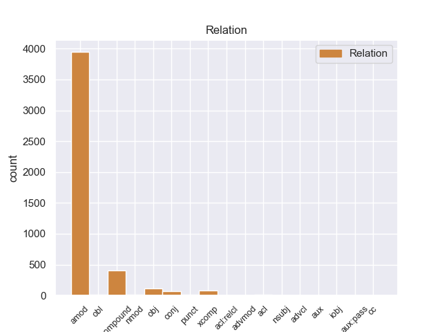
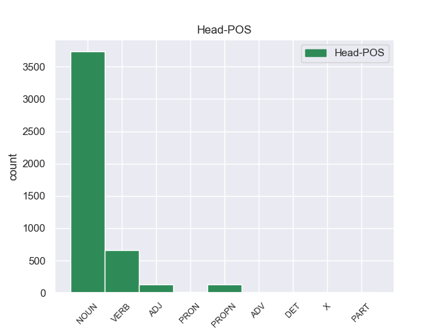
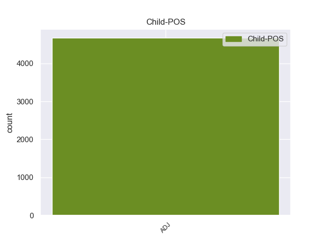

Distribution of features within this leaf



Agreement Rules sorted by frequency.
- When the dependent token is the adjectival modifier(amod) of the head token, and the dependent token is ADJ.
1 यादव _ _ _ _ 0 _ _ _
2 ने _ _ _ _ 0 _ _ _
3 कहा _ _ _ _ 0 _ _ _
4 कि _ _ _ _ 0 _ _ _
5 25 _ _ _ _ 0 _ _ _
6 जून _ _ _ _ 0 _ _ _
7 को _ _ _ _ 0 _ _ _
8 राजग _ _ _ _ 0 _ _ _
9 के _ _ _ _ 0 _ _ _
10 कार्यकर्ता _ _ _ _ 0 _ _ _
11 पूरे _ _ _ _ 0 _ _ _
12 राज्य _ _ _ _ 0 _ _ _
13 में _ _ _ _ 0 _ _ _
14 इस _ _ _ _ 0 _ _ _
15 दिन _ _ _ _ 0 _ _ _
16 को _ _ _ _ 0 _ _ _
17 काला काला ADJ JJ Case=Acc|Gender=Masc|Number=Sing 18 amod _ ChunkId=NP7|ChunkType=child|Translit=kālā
18 दिवस दिवस NOUN NN Case=Acc|Gender=Masc|Number=Sing|Person=3 0 _ _ _
19 के _ _ _ _ 0 _ _ _
20 तौर _ _ _ _ 0 _ _ _
21 पर _ _ _ _ 0 _ _ _
22 मनाएंगे _ _ _ _ 0 _ _ _
23 । _ _ _ _ 0 _ _ _
1 अब _ _ _ _ 0 _ _ _
2 आपको _ _ _ _ 0 _ _ _
3 चैट _ _ _ _ 0 _ _ _
4 करते _ _ _ _ 0 _ _ _
5 वक्त _ _ _ _ 0 _ _ _
6 हेलो _ _ _ _ 0 _ _ _
7 , _ _ _ _ 0 _ _ _
8 हाय _ _ _ _ 0 _ _ _
9 और _ _ _ _ 0 _ _ _
10 बाय _ _ _ _ 0 _ _ _
11 लिखने _ _ _ _ 0 _ _ _
12 की _ _ _ _ 0 _ _ _
13 बात _ _ _ _ 0 _ _ _
14 भी _ _ _ _ 0 _ _ _
15 पुरानी पुराना ADJ JJ Gender=Fem|Number=Sing 16 compound _ ChunkId=JJP|ChunkType=head|Translit=purānī
16 हो हो VERB VM Gender=Fem|Number=Sing|Person=3|Voice=Act 0 _ _ _
17 चली _ _ _ _ 0 _ _ _
18 है _ _ _ _ 0 _ _ _
19 । _ _ _ _ 0 _ _ _
1 इतना इतना ADJ QF Gender=Masc|Number=Sing 2 obj _ ChunkId=JJP|ChunkType=head|Translit=itanā
2 सुनना सुन VERB VM Gender=Masc|Number=Sing|VerbForm=Inf|Voice=Act 0 _ _ _
3 था _ _ _ _ 0 _ _ _
4 कि _ _ _ _ 0 _ _ _
5 कैदियों _ _ _ _ 0 _ _ _
6 में _ _ _ _ 0 _ _ _
7 भगदड़ _ _ _ _ 0 _ _ _
8 मच _ _ _ _ 0 _ _ _
9 गई _ _ _ _ 0 _ _ _
10 । _ _ _ _ 0 _ _ _
1 दिल्लीवासियों _ _ _ _ 0 _ _ _
2 के _ _ _ _ 0 _ _ _
3 लिए _ _ _ _ 0 _ _ _
4 बृहस्पतिवार _ _ _ _ 0 _ _ _
5 का _ _ _ _ 0 _ _ _
6 दिन _ _ _ _ 0 _ _ _
7 काफी _ _ _ _ 0 _ _ _
8 सुहावना सुहावना ADJ JJ Gender=Masc|Number=Sing 9 xcomp _ ChunkId=JJP|ChunkType=head|Translit=suhāvanā
9 रहा रह VERB VM Aspect=Perf|Gender=Masc|Number=Sing|VerbForm=Part|Voice=Act 0 _ _ _
10 । _ _ _ _ 0 _ _ _
1 पुलिस _ _ _ _ 0 _ _ _
2 का _ _ _ _ 0 _ _ _
3 कहना _ _ _ _ 0 _ _ _
4 है _ _ _ _ 0 _ _ _
5 कि _ _ _ _ 0 _ _ _
6 छापेमारी _ _ _ _ 0 _ _ _
7 में _ _ _ _ 0 _ _ _
8 टेलीविज़न टेलीविज़न NOUN NN Case=Nom|Gender=Fem|Number=Sing|Person=3 0 _ _ _
9 , _ _ _ _ 0 _ _ _
10 कंप्यूटर्स _ _ _ _ 0 _ _ _
11 , _ _ _ _ 0 _ _ _
12 टेलीफ़ोन _ _ _ _ 0 _ _ _
13 सेट्स _ _ _ _ 0 _ _ _
14 और _ _ _ _ 0 _ _ _
15 बड़ी बड़ा ADJ JJ Case=Acc|Gender=Fem|Number=Sing 8 conj _ _
16 संख्या _ _ _ _ 0 _ _ _
17 में _ _ _ _ 0 _ _ _
18 नकदी _ _ _ _ 0 _ _ _
19 भी _ _ _ _ 0 _ _ _
20 बरामद _ _ _ _ 0 _ _ _
21 हुई _ _ _ _ 0 _ _ _
22 है _ _ _ _ 0 _ _ _
23 । _ _ _ _ 0 _ _ _
1 रत्नसेन _ _ _ _ 0 _ _ _
2 को _ _ _ _ 0 _ _ _
3 यह _ _ _ _ 0 _ _ _
4 भी _ _ _ _ 0 _ _ _
5 मालूमहुआ _ _ _ _ 0 _ _ _
6 कि _ _ _ _ 0 _ _ _
7 राजाने _ _ _ _ 0 _ _ _
8 ढिंढोरा _ _ _ _ 0 _ _ _
9 पिटवाया _ _ _ _ 0 _ _ _
10 है _ _ _ _ 0 _ _ _
11 कि _ _ _ _ 0 _ _ _
12 जो _ _ _ _ 0 _ _ _
13 कोई _ _ _ _ 0 _ _ _
14 उस _ _ _ _ 0 _ _ _
15 जौहरी _ _ _ _ 0 _ _ _
16 की _ _ _ _ 0 _ _ _
17 बात _ _ _ _ 0 _ _ _
18 को _ _ _ _ 0 _ _ _
19 झूठा _ _ _ _ 0 _ _ _
20 साबितकरेगाउसको _ _ _ _ 0 _ _ _
21 राजा _ _ _ _ 0 _ _ _
22 अपना _ _ _ _ 0 _ _ _
23 आधा _ _ _ _ 0 _ _ _
24 राज _ _ _ _ 0 _ _ _
25 - _ _ _ _ 0 _ _ _
26 पाट _ _ _ _ 0 _ _ _
27 दे _ _ _ _ 0 _ _ _
28 देगा _ _ _ _ 0 _ _ _
29 . _ _ _ _ 0 _ _ _
30 उत्सुकतवश _ _ _ _ 0 _ _ _
31 रत्नसेन _ _ _ _ 0 _ _ _
32 भी _ _ _ _ 0 _ _ _
33 राजा _ _ _ _ 0 _ _ _
34 के _ _ _ _ 0 _ _ _
35 दरबारमें _ _ _ _ 0 _ _ _
36 जौहरियों _ _ _ _ 0 _ _ _
37 के _ _ _ _ 0 _ _ _
38 बीच _ _ _ _ 0 _ _ _
39 जा _ _ _ _ 0 _ _ _
40 बैठा _ _ _ _ 0 _ _ _
41 . _ _ _ _ 0 _ _ _
42 हीरे _ _ _ _ 0 _ _ _
43 - _ _ _ _ 0 _ _ _
44 जवाहरातों _ _ _ _ 0 _ _ _
45 का _ _ _ _ 0 _ _ _
46 ढेर _ _ _ _ 0 _ _ _
47 लगा _ _ _ _ 0 _ _ _
48 हुआ _ _ _ _ 0 _ _ _
49 था _ _ _ _ 0 _ _ _
50 . _ _ _ _ 0 _ _ _
51 जौहरी _ _ _ _ 0 _ _ _
52 उनकोदेख _ _ _ _ 0 _ _ _
53 - _ _ _ _ 0 _ _ _
54 देखकर _ _ _ _ 0 _ _ _
55 बता बता VERB VM Aspect=Imp|Gender=Masc|Number=Sing|Person=3|VerbForm=Part|Voice=Act 0 _ _ _
56 रहा _ _ _ _ 0 _ _ _
57 था _ _ _ _ 0 _ _ _
58 कि _ _ _ _ 0 _ _ _
59 कौन _ _ _ _ 0 _ _ _
60 हीरा _ _ _ _ 0 _ _ _
61 झूठा झूठा ADJ JJ Gender=Masc|Number=Sing 55 nmod _ _
62 है _ _ _ _ 0 _ _ _
63 और _ _ _ _ 0 _ _ _
64 कौन _ _ _ _ 0 _ _ _
65 सच्चा _ _ _ _ 0 _ _ _
66 . _ _ _ _ 0 _ _ _
67 किन्तु _ _ _ _ 0 _ _ _
68 इसी _ _ _ _ 0 _ _ _
69 बीच _ _ _ _ 0 _ _ _
70 एकहीरे _ _ _ _ 0 _ _ _
71 पर _ _ _ _ 0 _ _ _
72 रत्नसेन _ _ _ _ 0 _ _ _
73 की _ _ _ _ 0 _ _ _
74 निगाह _ _ _ _ 0 _ _ _
75 जम _ _ _ _ 0 _ _ _
76 गई _ _ _ _ 0 _ _ _
77 . _ _ _ _ 0 _ _ _
78 उसने _ _ _ _ 0 _ _ _
79 सोचा _ _ _ _ 0 _ _ _
80 कि _ _ _ _ 0 _ _ _
81 अभी _ _ _ _ 0 _ _ _
82 - _ _ _ _ 0 _ _ _
83 अभी _ _ _ _ 0 _ _ _
84 तो _ _ _ _ 0 _ _ _
85 जौहरी _ _ _ _ 0 _ _ _
86 इसे _ _ _ _ 0 _ _ _
87 सच्चाबता _ _ _ _ 0 _ _ _
88 चुका _ _ _ _ 0 _ _ _
89 है _ _ _ _ 0 _ _ _
90 . _ _ _ _ 0 _ _ _
91 किन्तु _ _ _ _ 0 _ _ _
92 यह _ _ _ _ 0 _ _ _
93 सच्चा _ _ _ _ 0 _ _ _
94 नहीं _ _ _ _ 0 _ _ _
95 मालूम _ _ _ _ 0 _ _ _
96 देता _ _ _ _ 0 _ _ _
97 . _ _ _ _ 0 _ _ _
98 रत्नसेन _ _ _ _ 0 _ _ _
99 भरी _ _ _ _ 0 _ _ _
100 सभा _ _ _ _ 0 _ _ _
101 में _ _ _ _ 0 _ _ _
102 उठकर _ _ _ _ 0 _ _ _
103 खड़ाहो _ _ _ _ 0 _ _ _
104 गया _ _ _ _ 0 _ _ _
105 . _ _ _ _ 0 _ _ _
106 उस _ _ _ _ 0 _ _ _
107 हीरे _ _ _ _ 0 _ _ _
108 को _ _ _ _ 0 _ _ _
109 हाथ _ _ _ _ 0 _ _ _
110 में _ _ _ _ 0 _ _ _
111 लेकर _ _ _ _ 0 _ _ _
112 उसने _ _ _ _ 0 _ _ _
113 विश्वासपूर्वक _ _ _ _ 0 _ _ _
114 कहा _ _ _ _ 0 _ _ _
115 - _ _ _ _ 0 _ _ _
116 " _ _ _ _ 0 _ _ _
1 उन्होंने _ _ _ _ 0 _ _ _
2 आरएसएस _ _ _ _ 0 _ _ _
3 कार्य _ _ _ _ 0 _ _ _
4 - _ _ _ _ 0 _ _ _
5 कर्ताओं _ _ _ _ 0 _ _ _
6 को _ _ _ _ 0 _ _ _
7 उन _ _ _ _ 0 _ _ _
8 ' _ _ _ _ 0 _ _ _
9 वोट वोट ADJ JJC Case=Nom|Gender=Masc|Number=Sing|Person=3 11 punct _ ChunkId=NP3|ChunkType=child|Tam=0|Translit=voṭa|Vib=0
10 - _ _ _ _ 0 _ _ _
11 भूखे भूखा ADJ JJ Case=Acc|Gender=Masc|Number=Plur 0 _ _ _
12 ' _ _ _ _ 0 _ _ _
13 नेताओं _ _ _ _ 0 _ _ _
14 से _ _ _ _ 0 _ _ _
15 चौकस _ _ _ _ 0 _ _ _
16 रहने _ _ _ _ 0 _ _ _
17 का _ _ _ _ 0 _ _ _
18 उपदेश _ _ _ _ 0 _ _ _
19 दिया _ _ _ _ 0 _ _ _
20 , _ _ _ _ 0 _ _ _
21 जो _ _ _ _ 0 _ _ _
22 पूरे _ _ _ _ 0 _ _ _
23 देश _ _ _ _ 0 _ _ _
24 को _ _ _ _ 0 _ _ _
25 कुछ _ _ _ _ 0 _ _ _
26 नहीं _ _ _ _ 0 _ _ _
27 समझते _ _ _ _ 0 _ _ _
28 हैं _ _ _ _ 0 _ _ _
29 । _ _ _ _ 0 _ _ _
1 यह _ _ _ _ 0 _ _ _
2 लहराती _ _ _ _ 0 _ _ _
3 थिरकती _ _ _ _ 0 _ _ _
4 नृत्य _ _ _ _ 0 _ _ _
5 करतीसदा _ _ _ _ 0 _ _ _
6 चंचल _ _ _ _ 0 _ _ _
7 रहती _ _ _ _ 0 _ _ _
8 है _ _ _ _ 0 _ _ _
9 . _ _ _ _ 0 _ _ _
10 फिर _ _ _ _ 0 _ _ _
11 भी _ _ _ _ 0 _ _ _
12 इस _ _ _ _ 0 _ _ _
13 चपल _ _ _ _ 0 _ _ _
14 हृदय _ _ _ _ 0 _ _ _
15 का _ _ _ _ 0 _ _ _
16 स्नेह _ _ _ _ 0 _ _ _
17 सबको _ _ _ _ 0 _ _ _
18 सुलभ _ _ _ _ 0 _ _ _
19 है _ _ _ _ 0 _ _ _
20 . _ _ _ _ 0 _ _ _
21 यह _ _ _ _ 0 _ _ _
22 कितनेही _ _ _ _ 0 _ _ _
23 जनों _ _ _ _ 0 _ _ _
24 को _ _ _ _ 0 _ _ _
25 उस _ _ _ _ 0 _ _ _
26 पार _ _ _ _ 0 _ _ _
27 से _ _ _ _ 0 _ _ _
28 इस _ _ _ _ 0 _ _ _
29 पार _ _ _ _ 0 _ _ _
30 पहुँचाती _ _ _ _ 0 _ _ _
31 , _ _ _ _ 0 _ _ _
32 भरत _ _ _ _ 0 _ _ _
33 मिलाप _ _ _ _ 0 _ _ _
34 का _ _ _ _ 0 _ _ _
35 कार्य _ _ _ _ 0 _ _ _
36 करती _ _ _ _ 0 _ _ _
37 है _ _ _ _ 0 _ _ _
38 . _ _ _ _ 0 _ _ _
39 झीलकी _ _ _ _ 0 _ _ _
40 झलक _ _ _ _ 0 _ _ _
41 से _ _ _ _ 0 _ _ _
42 चमत्कृत _ _ _ _ 0 _ _ _
43 होते _ _ _ _ 0 _ _ _
44 - _ _ _ _ 0 _ _ _
45 होते _ _ _ _ 0 _ _ _
46 हम _ _ _ _ 0 _ _ _
47 आगे _ _ _ _ 0 _ _ _
48 बढ़ते _ _ _ _ 0 _ _ _
49 हैं _ _ _ _ 0 _ _ _
50 . _ _ _ _ 0 _ _ _
51 शीघ्र _ _ _ _ 0 _ _ _
52 ही _ _ _ _ 0 _ _ _
53 हमारी _ _ _ _ 0 _ _ _
54 नाव _ _ _ _ 0 _ _ _
55 या _ _ _ _ 0 _ _ _
56 बोटचाल _ _ _ _ 0 _ _ _
57 धीमी _ _ _ _ 0 _ _ _
58 कर _ _ _ _ 0 _ _ _
59 लेती _ _ _ _ 0 _ _ _
60 है _ _ _ _ 0 _ _ _
61 . _ _ _ _ 0 _ _ _
62 हम _ _ _ _ 0 _ _ _
63 घाट _ _ _ _ 0 _ _ _
64 पर _ _ _ _ 0 _ _ _
65 पहुँच _ _ _ _ 0 _ _ _
66 जाते _ _ _ _ 0 _ _ _
67 हैं _ _ _ _ 0 _ _ _
68 . _ _ _ _ 0 _ _ _
69 विशाल _ _ _ _ 0 _ _ _
70 प्रगतिशील _ _ _ _ 0 _ _ _
71 और _ _ _ _ 0 _ _ _
72 भड़कीलेमहानगर _ _ _ _ 0 _ _ _
73 से _ _ _ _ 0 _ _ _
74 थोड़ी _ _ _ _ 0 _ _ _
75 दूर _ _ _ _ 0 _ _ _
76 इस _ _ _ _ 0 _ _ _
77 प्राचीन _ _ _ _ 0 _ _ _
78 प्रान्तर _ _ _ _ 0 _ _ _
79 में _ _ _ _ 0 _ _ _
80 प्रवेश _ _ _ _ 0 _ _ _
81 करते _ _ _ _ 0 _ _ _
82 हैं _ _ _ _ 0 _ _ _
83 . _ _ _ _ 0 _ _ _
84 नया _ _ _ _ 0 _ _ _
85 नागरिकअंचल _ _ _ _ 0 _ _ _
86 और _ _ _ _ 0 _ _ _
87 पुराना _ _ _ _ 0 _ _ _
88 मुहल्ला _ _ _ _ 0 _ _ _
89 - _ _ _ _ 0 _ _ _
90 दोनों _ _ _ _ 0 _ _ _
91 में _ _ _ _ 0 _ _ _
92 कैसा _ _ _ _ 0 _ _ _
93 अन्तर _ _ _ _ 0 _ _ _
94 है _ _ _ _ 0 _ _ _
95 . _ _ _ _ 0 _ _ _
96 प्राचीन _ _ _ _ 0 _ _ _
97 रूढ़ि _ _ _ _ 0 _ _ _
98 - _ _ _ _ 0 _ _ _
99 रीतियोंका _ _ _ _ 0 _ _ _
100 केन्द्र _ _ _ _ 0 _ _ _
101 पुराना _ _ _ _ 0 _ _ _
102 मुहल्ला _ _ _ _ 0 _ _ _
103 अब _ _ _ _ 0 _ _ _
104 भी _ _ _ _ 0 _ _ _
105 पुराना पुराना ADJ JJ Gender=Masc|Number=Sing 107 acl _ _
106 ही _ _ _ _ 0 _ _ _
107 बना बन VERB VM Aspect=Perf|Gender=Masc|Number=Sing|Person=3|VerbForm=Part|Voice=Act 0 _ _ _
108 रहता _ _ _ _ 0 _ _ _
109 है _ _ _ _ 0 _ _ _
110 . _ _ _ _ 0 _ _ _
111 युग _ _ _ _ 0 _ _ _
112 - _ _ _ _ 0 _ _ _
113 परिवर्तन _ _ _ _ 0 _ _ _
114 केनिशान _ _ _ _ 0 _ _ _
115 के _ _ _ _ 0 _ _ _
116 रूप _ _ _ _ 0 _ _ _
117 में _ _ _ _ 0 _ _ _
118 नयी _ _ _ _ 0 _ _ _
119 सभ्यता _ _ _ _ 0 _ _ _
120 के _ _ _ _ 0 _ _ _
121 कुछ _ _ _ _ 0 _ _ _
122 चिन्ह _ _ _ _ 0 _ _ _
123 यहाँ _ _ _ _ 0 _ _ _
124 जरूर _ _ _ _ 0 _ _ _
125 नजर _ _ _ _ 0 _ _ _
126 आते _ _ _ _ 0 _ _ _
127 हैं _ _ _ _ 0 _ _ _
128 . _ _ _ _ 0 _ _ _
129 बिजली _ _ _ _ 0 _ _ _
130 , _ _ _ _ 0 _ _ _
131 नल _ _ _ _ 0 _ _ _
132 और _ _ _ _ 0 _ _ _
133 कहीं _ _ _ _ 0 _ _ _
134 - _ _ _ _ 0 _ _ _
135 कहीं _ _ _ _ 0 _ _ _
136 खपरैल _ _ _ _ 0 _ _ _
137 की _ _ _ _ 0 _ _ _
138 पुरानी _ _ _ _ 0 _ _ _
139 छटा _ _ _ _ 0 _ _ _
140 को _ _ _ _ 0 _ _ _
141 छिपाती _ _ _ _ 0 _ _ _
142 कंक्रीट _ _ _ _ 0 _ _ _
143 की _ _ _ _ 0 _ _ _
144 नयी _ _ _ _ 0 _ _ _
145 पोशाक _ _ _ _ 0 _ _ _
146 नवीनताका _ _ _ _ 0 _ _ _
147 जामा _ _ _ _ 0 _ _ _
148 पहनाती _ _ _ _ 0 _ _ _
149 है _ _ _ _ 0 _ _ _
150 . _ _ _ _ 0 _ _ _
151 फिर _ _ _ _ 0 _ _ _
152 भी _ _ _ _ 0 _ _ _
153 , _ _ _ _ 0 _ _ _
1 कल _ _ _ _ 0 _ _ _
2 - _ _ _ _ 0 _ _ _
3 पूर्ज़े पूर्जा ADJ JJ Gender=Masc|Number=Plur 6 obl _ _
4 मिलने _ _ _ _ 0 _ _ _
5 में _ _ _ _ 0 _ _ _
6 आ आ VERB VM Gender=Masc|Number=Sing|Person=2|Polite=Form|Voice=Act 0 _ _ _
7 रही _ _ _ _ 0 _ _ _
8 कठिनाईयों _ _ _ _ 0 _ _ _
9 को _ _ _ _ 0 _ _ _
10 तेज़ीसे _ _ _ _ 0 _ _ _
11 दूर _ _ _ _ 0 _ _ _
12 - _ _ _ _ 0 _ _ _
13 किया _ _ _ _ 0 _ _ _
14 जा _ _ _ _ 0 _ _ _
15 रहा _ _ _ _ 0 _ _ _
16 है _ _ _ _ 0 _ _ _
17 और _ _ _ _ 0 _ _ _
18 उम्मीद _ _ _ _ 0 _ _ _
19 है _ _ _ _ 0 _ _ _
20 कि _ _ _ _ 0 _ _ _
21 अगले _ _ _ _ 0 _ _ _
22 महीने _ _ _ _ 0 _ _ _
23 से _ _ _ _ 0 _ _ _
24 सामान्य _ _ _ _ 0 _ _ _
25 दिनों _ _ _ _ 0 _ _ _
26 की _ _ _ _ 0 _ _ _
27 अपेक्षा _ _ _ _ 0 _ _ _
28 70फ़ीसदी _ _ _ _ 0 _ _ _
29 उत्पादन _ _ _ _ 0 _ _ _
30 होने _ _ _ _ 0 _ _ _
31 लगेगा _ _ _ _ 0 _ _ _
32 । _ _ _ _ 0 _ _ _
1 कीर्ति _ _ _ _ 0 _ _ _
2 शर्मा _ _ _ _ 0 _ _ _
3 प्रमुख _ _ _ _ 0 _ _ _
4 थे _ _ _ _ 0 _ _ _
5 . _ _ _ _ 0 _ _ _
6 डॉ _ _ _ _ 0 _ _ _
7 . _ _ _ _ 0 _ _ _
8 के _ _ _ _ 0 _ _ _
9 . _ _ _ _ 0 _ _ _
10 एल _ _ _ _ 0 _ _ _
11 . _ _ _ _ 0 _ _ _
12 पासी _ _ _ _ 0 _ _ _
13 ने _ _ _ _ 0 _ _ _
14 नेत्र _ _ _ _ 0 _ _ _
15 रोगों _ _ _ _ 0 _ _ _
16 के _ _ _ _ 0 _ _ _
17 कारण _ _ _ _ 0 _ _ _
18 , _ _ _ _ 0 _ _ _
19 निवारण _ _ _ _ 0 _ _ _
20 और _ _ _ _ 0 _ _ _
21 चिकित्सा _ _ _ _ 0 _ _ _
22 पर _ _ _ _ 0 _ _ _
23 बड़ा बडा ADJ JJ Case=Nom|Gender=Masc|Number=Sing 47 nsubj _ _
24 ही _ _ _ _ 0 _ _ _
25 शोधपूर्ण _ _ _ _ 0 _ _ _
26 भाषणदिया _ _ _ _ 0 _ _ _
27 . _ _ _ _ 0 _ _ _
28 डॉ _ _ _ _ 0 _ _ _
29 . _ _ _ _ 0 _ _ _
30 मदन _ _ _ _ 0 _ _ _
31 गुलाटी _ _ _ _ 0 _ _ _
32 ने _ _ _ _ 0 _ _ _
33 उच्च _ _ _ _ 0 _ _ _
34 रक्तचाप _ _ _ _ 0 _ _ _
35 ( _ _ _ _ 0 _ _ _
36 हाई _ _ _ _ 0 _ _ _
37 ब्लड _ _ _ _ 0 _ _ _
38 - _ _ _ _ 0 _ _ _
39 प्रैशर _ _ _ _ 0 _ _ _
40 ) _ _ _ _ 0 _ _ _
41 पर _ _ _ _ 0 _ _ _
42 अपना _ _ _ _ 0 _ _ _
43 शोध _ _ _ _ 0 _ _ _
44 पत्रपढ़ा _ _ _ _ 0 _ _ _
45 और _ _ _ _ 0 _ _ _
46 यह _ _ _ _ 0 _ _ _
47 बताया बता VERB VM Aspect=Perf|Gender=Masc|Number=Sing|VerbForm=Part|Voice=Act 0 _ _ _
48 कि _ _ _ _ 0 _ _ _
49 आज _ _ _ _ 0 _ _ _
50 के _ _ _ _ 0 _ _ _
51 विषाक्त _ _ _ _ 0 _ _ _
52 वातावरण _ _ _ _ 0 _ _ _
53 में _ _ _ _ 0 _ _ _
54 मानसिक _ _ _ _ 0 _ _ _
55 तनाव _ _ _ _ 0 _ _ _
56 के _ _ _ _ 0 _ _ _
57 कारण _ _ _ _ 0 _ _ _
58 यह _ _ _ _ 0 _ _ _
59 रोगहोता _ _ _ _ 0 _ _ _
60 है _ _ _ _ 0 _ _ _
61 . _ _ _ _ 0 _ _ _
1 ' _ _ _ _ 0 _ _ _
2 उन्होंने _ _ _ _ 0 _ _ _
3 इसके _ _ _ _ 0 _ _ _
4 उत्तार _ _ _ _ 0 _ _ _
5 में _ _ _ _ 0 _ _ _
6 सिर्फ _ _ _ _ 0 _ _ _
7 इतना _ _ _ _ 0 _ _ _
8 कहा _ _ _ _ 0 _ _ _
9 था _ _ _ _ 0 _ _ _
10 , _ _ _ _ 0 _ _ _
11 ' _ _ _ _ 0 _ _ _
12 हमें _ _ _ _ 0 _ _ _
13 आजादी _ _ _ _ 0 _ _ _
14 चाहिए _ _ _ _ 0 _ _ _
15 ' _ _ _ _ 0 _ _ _
16 लगता _ _ _ _ 0 _ _ _
17 है _ _ _ _ 0 _ _ _
18 कि _ _ _ _ 0 _ _ _
19 कश्मीर _ _ _ _ 0 _ _ _
20 में _ _ _ _ 0 _ _ _
21 पूरी _ _ _ _ 0 _ _ _
22 घाटी _ _ _ _ 0 _ _ _
23 सड़कों _ _ _ _ 0 _ _ _
24 पर _ _ _ _ 0 _ _ _
25 उतर _ _ _ _ 0 _ _ _
26 आई _ _ _ _ 0 _ _ _
27 है _ _ _ _ 0 _ _ _
28 क्रुद्ध _ _ _ _ 0 _ _ _
29 युवक _ _ _ _ 0 _ _ _
30 भीड़ _ _ _ _ 0 _ _ _
31 का _ _ _ _ 0 _ _ _
32 नेतृत्व _ _ _ _ 0 _ _ _
33 कर _ _ _ _ 0 _ _ _
34 रहे _ _ _ _ 0 _ _ _
35 हैं _ _ _ _ 0 _ _ _
36 हो _ _ _ _ 0 _ _ _
37 सकता _ _ _ _ 0 _ _ _
38 है _ _ _ _ 0 _ _ _
39 कि _ _ _ _ 0 _ _ _
40 कोई _ _ _ _ 0 _ _ _
41 खास _ _ _ _ 0 _ _ _
42 गु्रप _ _ _ _ 0 _ _ _
43 उन्हें _ _ _ _ 0 _ _ _
44 उत्तेजितकर _ _ _ _ 0 _ _ _
45 रहा _ _ _ _ 0 _ _ _
46 हो _ _ _ _ 0 _ _ _
47 यह _ _ _ _ 0 _ _ _
48 सोचना _ _ _ _ 0 _ _ _
49 गलत _ _ _ _ 0 _ _ _
50 होगा _ _ _ _ 0 _ _ _
51 कि _ _ _ _ 0 _ _ _
52 उनके _ _ _ _ 0 _ _ _
53 आक्रोश _ _ _ _ 0 _ _ _
54 पर _ _ _ _ 0 _ _ _
55 ध्यान _ _ _ _ 0 _ _ _
56 नहीं _ _ _ _ 0 _ _ _
57 दिया _ _ _ _ 0 _ _ _
58 जाना _ _ _ _ 0 _ _ _
59 चाहिए _ _ _ _ 0 _ _ _
60 खासतौर _ _ _ _ 0 _ _ _
61 उन _ _ _ _ 0 _ _ _
62 लोगों _ _ _ _ 0 _ _ _
63 के _ _ _ _ 0 _ _ _
64 क्षोभ _ _ _ _ 0 _ _ _
65 और _ _ _ _ 0 _ _ _
66 आक्रोश _ _ _ _ 0 _ _ _
67 पर _ _ _ _ 0 _ _ _
68 जिन्होंने _ _ _ _ 0 _ _ _
69 अपने _ _ _ _ 0 _ _ _
70 प्रियजन _ _ _ _ 0 _ _ _
71 गोलीबारी _ _ _ _ 0 _ _ _
72 में _ _ _ _ 0 _ _ _
73 गंवाए _ _ _ _ 0 _ _ _
74 हैं _ _ _ _ 0 _ _ _
75 सरकार _ _ _ _ 0 _ _ _
76 , _ _ _ _ 0 _ _ _
77 खासतौर _ _ _ _ 0 _ _ _
78 पर _ _ _ _ 0 _ _ _
79 मुख्यमंत्री _ _ _ _ 0 _ _ _
80 उमरअब्दुल्ला _ _ _ _ 0 _ _ _
81 का _ _ _ _ 0 _ _ _
82 मानना _ _ _ _ 0 _ _ _
83 है _ _ _ _ 0 _ _ _
84 कि _ _ _ _ 0 _ _ _
85 यदि _ _ _ _ 0 _ _ _
86 सशस्त्र _ _ _ _ 0 _ _ _
87 बल _ _ _ _ 0 _ _ _
88 विशेषाधिकार _ _ _ _ 0 _ _ _
89 अधिनियम _ _ _ _ 0 _ _ _
90 में _ _ _ _ 0 _ _ _
91 समुचित _ _ _ _ 0 _ _ _
92 संशोधित _ _ _ _ 0 _ _ _
93 कर _ _ _ _ 0 _ _ _
94 दिए _ _ _ _ 0 _ _ _
95 जाएं _ _ _ _ 0 _ _ _
96 या _ _ _ _ 0 _ _ _
97 पूर्णतः _ _ _ _ 0 _ _ _
98 समाप्तकर _ _ _ _ 0 _ _ _
99 दिया _ _ _ _ 0 _ _ _
100 जाए _ _ _ _ 0 _ _ _
101 तो _ _ _ _ 0 _ _ _
102 लोगों _ _ _ _ 0 _ _ _
103 का _ _ _ _ 0 _ _ _
104 गुस्सा _ _ _ _ 0 _ _ _
105 ठंडा _ _ _ _ 0 _ _ _
106 पड़ _ _ _ _ 0 _ _ _
107 सकता _ _ _ _ 0 _ _ _
108 है _ _ _ _ 0 _ _ _
109 इस _ _ _ _ 0 _ _ _
110 समस्या _ _ _ _ 0 _ _ _
111 का _ _ _ _ 0 _ _ _
112 राजनीतिकरण _ _ _ _ 0 _ _ _
113 कर _ _ _ _ 0 _ _ _
114 दिया _ _ _ _ 0 _ _ _
115 गया _ _ _ _ 0 _ _ _
116 है _ _ _ _ 0 _ _ _
117 और _ _ _ _ 0 _ _ _
118 नईदिल्ली _ _ _ _ 0 _ _ _
119 इसे _ _ _ _ 0 _ _ _
120 पूरीतरह _ _ _ _ 0 _ _ _
121 जानती _ _ _ _ 0 _ _ _
122 है _ _ _ _ 0 _ _ _
123 कहने _ _ _ _ 0 _ _ _
124 की _ _ _ _ 0 _ _ _
125 जरूरत _ _ _ _ 0 _ _ _
126 नहीं _ _ _ _ 0 _ _ _
127 है _ _ _ _ 0 _ _ _
128 कि _ _ _ _ 0 _ _ _
129 अबतक _ _ _ _ 0 _ _ _
130 इस _ _ _ _ 0 _ _ _
131 मामले _ _ _ _ 0 _ _ _
132 को _ _ _ _ 0 _ _ _
133 सुलझा _ _ _ _ 0 _ _ _
134 लिया _ _ _ _ 0 _ _ _
135 जाना _ _ _ _ 0 _ _ _
136 चाहिए _ _ _ _ 0 _ _ _
137 था _ _ _ _ 0 _ _ _
138 इसमें _ _ _ _ 0 _ _ _
139 जितना _ _ _ _ 0 _ _ _
140 विलंब _ _ _ _ 0 _ _ _
141 होता _ _ _ _ 0 _ _ _
142 जाएगा _ _ _ _ 0 _ _ _
143 उतनी _ _ _ _ 0 _ _ _
144 ही _ _ _ _ 0 _ _ _
145 यह _ _ _ _ 0 _ _ _
146 उलझती _ _ _ _ 0 _ _ _
147 जाएगी _ _ _ _ 0 _ _ _
148 प्रधानमंत्री _ _ _ _ 0 _ _ _
149 मनमोहनसिंह _ _ _ _ 0 _ _ _
150 का _ _ _ _ 0 _ _ _
151 यह _ _ _ _ 0 _ _ _
152 बयान _ _ _ _ 0 _ _ _
153 कि _ _ _ _ 0 _ _ _
154 विश्वास _ _ _ _ 0 _ _ _
155 में _ _ _ _ 0 _ _ _
156 कमी _ _ _ _ 0 _ _ _
157 और _ _ _ _ 0 _ _ _
158 सरकार _ _ _ _ 0 _ _ _
159 के _ _ _ _ 0 _ _ _
160 कामकाज _ _ _ _ 0 _ _ _
161 के _ _ _ _ 0 _ _ _
162 मुद्दों _ _ _ _ 0 _ _ _
163 पर _ _ _ _ 0 _ _ _
164 ध्यान _ _ _ _ 0 _ _ _
165 दिए _ _ _ _ 0 _ _ _
166 जाने _ _ _ _ 0 _ _ _
167 की _ _ _ _ 0 _ _ _
168 जरूरत _ _ _ _ 0 _ _ _
169 है _ _ _ _ 0 _ _ _
170 , _ _ _ _ 0 _ _ _
171 से _ _ _ _ 0 _ _ _
172 समस्या _ _ _ _ 0 _ _ _
173 का _ _ _ _ 0 _ _ _
174 हल _ _ _ _ 0 _ _ _
175 नहीं _ _ _ _ 0 _ _ _
176 निकल _ _ _ _ 0 _ _ _
177 सकता _ _ _ _ 0 _ _ _
178 अपनी _ _ _ _ 0 _ _ _
179 मूर्खताओं _ _ _ _ 0 _ _ _
180 का _ _ _ _ 0 _ _ _
181 ठीकरा _ _ _ _ 0 _ _ _
182 नेशनलकांफ्रेंस _ _ _ _ 0 _ _ _
183 के _ _ _ _ 0 _ _ _
184 सिर _ _ _ _ 0 _ _ _
185 फोड़ने _ _ _ _ 0 _ _ _
186 का _ _ _ _ 0 _ _ _
187 कोई _ _ _ _ 0 _ _ _
188 मतलब _ _ _ _ 0 _ _ _
189 नहीं _ _ _ _ 0 _ _ _
190 है _ _ _ _ 0 _ _ _
191 , _ _ _ _ 0 _ _ _
192 हर _ _ _ _ 0 _ _ _
193 बार _ _ _ _ 0 _ _ _
194 आर्थिक _ _ _ _ 0 _ _ _
195 पैकेज _ _ _ _ 0 _ _ _
196 अथवा _ _ _ _ 0 _ _ _
197 युवाओं _ _ _ _ 0 _ _ _
198 के _ _ _ _ 0 _ _ _
199 रोजगार _ _ _ _ 0 _ _ _
200 सृजन _ _ _ _ 0 _ _ _
201 को _ _ _ _ 0 _ _ _
202 रामबाण _ _ _ _ 0 _ _ _
203 माना _ _ _ _ 0 _ _ _
204 जाता _ _ _ _ 0 _ _ _
205 रहा _ _ _ _ 0 _ _ _
206 है _ _ _ _ 0 _ _ _
207 शेखअब्दुल्ला _ _ _ _ 0 _ _ _
208 से _ _ _ _ 0 _ _ _
209 उमरअब्दुल्ला _ _ _ _ 0 _ _ _
210 के _ _ _ _ 0 _ _ _
211 समय _ _ _ _ 0 _ _ _
212 तक _ _ _ _ 0 _ _ _
213 चुनौती _ _ _ _ 0 _ _ _
214 यही _ _ _ _ 0 _ _ _
215 रही _ _ _ _ 0 _ _ _
216 है _ _ _ _ 0 _ _ _
217 कि _ _ _ _ 0 _ _ _
218 नईदिल्ली _ _ _ _ 0 _ _ _
219 श्रीनगर _ _ _ _ 0 _ _ _
220 को _ _ _ _ 0 _ _ _
221 आजादी _ _ _ _ 0 _ _ _
222 दिए _ _ _ _ 0 _ _ _
223 बिना _ _ _ _ 0 _ _ _
224 ही _ _ _ _ 0 _ _ _
225 उसकी _ _ _ _ 0 _ _ _
226 पहचान _ _ _ _ 0 _ _ _
227 का _ _ _ _ 0 _ _ _
228 अहसास _ _ _ _ 0 _ _ _
229 कैसे _ _ _ _ 0 _ _ _
230 कराए _ _ _ _ 0 _ _ _
231 यह _ _ _ _ 0 _ _ _
232 कहने _ _ _ _ 0 _ _ _
233 की _ _ _ _ 0 _ _ _
234 आवश्यकता _ _ _ _ 0 _ _ _
235 नहीं _ _ _ _ 0 _ _ _
236 कि _ _ _ _ 0 _ _ _
237 वार्ता _ _ _ _ 0 _ _ _
238 के _ _ _ _ 0 _ _ _
239 अलावा _ _ _ _ 0 _ _ _
240 कोई _ _ _ _ 0 _ _ _
241 विकल्प _ _ _ _ 0 _ _ _
242 नहीं _ _ _ _ 0 _ _ _
243 है _ _ _ _ 0 _ _ _
244 , _ _ _ _ 0 _ _ _
245 किंतु _ _ _ _ 0 _ _ _
246 घाटी _ _ _ _ 0 _ _ _
247 में _ _ _ _ 0 _ _ _
248 अग्रिम _ _ _ _ 0 _ _ _
249 मोर्चे _ _ _ _ 0 _ _ _
250 पर _ _ _ _ 0 _ _ _
251 तैनात _ _ _ _ 0 _ _ _
252 कट्टरपंथियों _ _ _ _ 0 _ _ _
253 से _ _ _ _ 0 _ _ _
254 वार्ता _ _ _ _ 0 _ _ _
255 करना _ _ _ _ 0 _ _ _
256 कठिन _ _ _ _ 0 _ _ _
257 होगा _ _ _ _ 0 _ _ _
258 , _ _ _ _ 0 _ _ _
259 क्योंकि _ _ _ _ 0 _ _ _
260 यही _ _ _ _ 0 _ _ _
261 वे _ _ _ _ 0 _ _ _
262 तत्व _ _ _ _ 0 _ _ _
263 हैं _ _ _ _ 0 _ _ _
264 जो _ _ _ _ 0 _ _ _
265 मजहब _ _ _ _ 0 _ _ _
266 के _ _ _ _ 0 _ _ _
267 नाम _ _ _ _ 0 _ _ _
268 पर _ _ _ _ 0 _ _ _
269 लोगों _ _ _ _ 0 _ _ _
270 को _ _ _ _ 0 _ _ _
271 उकसाते _ _ _ _ 0 _ _ _
272 हैं _ _ _ _ 0 _ _ _
273 उन्होंने _ _ _ _ 0 _ _ _
274 कश्मीरियत _ _ _ _ 0 _ _ _
275 की _ _ _ _ 0 _ _ _
276 बहुलवादी _ _ _ _ 0 _ _ _
277 धारणा _ _ _ _ 0 _ _ _
278 को _ _ _ _ 0 _ _ _
279 पृष्ठभूमि _ _ _ _ 0 _ _ _
280 में _ _ _ _ 0 _ _ _
281 धकेल _ _ _ _ 0 _ _ _
282 दिया _ _ _ _ 0 _ _ _
283 है _ _ _ _ 0 _ _ _
284 और _ _ _ _ 0 _ _ _
285 कट्टरतावाद _ _ _ _ 0 _ _ _
286 को _ _ _ _ 0 _ _ _
287 आगे _ _ _ _ 0 _ _ _
288 ले _ _ _ _ 0 _ _ _
289 आए _ _ _ _ 0 _ _ _
290 हैं _ _ _ _ 0 _ _ _
291 यहां _ _ _ _ 0 _ _ _
292 तक _ _ _ _ 0 _ _ _
293 कि _ _ _ _ 0 _ _ _
294 इस _ _ _ _ 0 _ _ _
295 मनगढं़त _ _ _ _ 0 _ _ _
296 खबर _ _ _ _ 0 _ _ _
297 ने _ _ _ _ 0 _ _ _
298 कि _ _ _ _ 0 _ _ _
299 अमेरिका _ _ _ _ 0 _ _ _
300 में _ _ _ _ 0 _ _ _
301 कुरान _ _ _ _ 0 _ _ _
302 को _ _ _ _ 0 _ _ _
303 जलाया _ _ _ _ 0 _ _ _
304 गया _ _ _ _ 0 _ _ _
305 है _ _ _ _ 0 _ _ _
306 , _ _ _ _ 0 _ _ _
307 14 _ _ _ _ 0 _ _ _
308 लोगों _ _ _ _ 0 _ _ _
309 की _ _ _ _ 0 _ _ _
310 बलि _ _ _ _ 0 _ _ _
311 ले _ _ _ _ 0 _ _ _
312 ली _ _ _ _ 0 _ _ _
313 नईदिल्ली _ _ _ _ 0 _ _ _
314 को _ _ _ _ 0 _ _ _
315 इन _ _ _ _ 0 _ _ _
316 तत्वों _ _ _ _ 0 _ _ _
317 को _ _ _ _ 0 _ _ _
318 उनसे _ _ _ _ 0 _ _ _
319 अलगकरना _ _ _ _ 0 _ _ _
320 होगा _ _ _ _ 0 _ _ _
321 जो _ _ _ _ 0 _ _ _
322 लोकतांत्रिक _ _ _ _ 0 _ _ _
323 और _ _ _ _ 0 _ _ _
324 बहुलवादी _ _ _ _ 0 _ _ _
325 ढंग _ _ _ _ 0 _ _ _
326 से _ _ _ _ 0 _ _ _
327 शासन _ _ _ _ 0 _ _ _
328 करना _ _ _ _ 0 _ _ _
329 चाहते चाह VERB VM Aspect=Imp|Gender=Masc|Number=Sing|Person=3|Polite=Form|VerbForm=Part|Voice=Act 0 _ _ _
330 हैं _ _ _ _ 0 _ _ _
331 यह _ _ _ _ 0 _ _ _
332 अच्छा अच्छा ADJ JJ Gender=Masc|Number=Sing 329 acl:relcl _ _
333 है _ _ _ _ 0 _ _ _
334 कि _ _ _ _ 0 _ _ _
335 प्रधानमंत्री _ _ _ _ 0 _ _ _
336 संविधान _ _ _ _ 0 _ _ _
337 के _ _ _ _ 0 _ _ _
338 तहत _ _ _ _ 0 _ _ _
339 किसी _ _ _ _ 0 _ _ _
340 भी _ _ _ _ 0 _ _ _
341 हद _ _ _ _ 0 _ _ _
342 तक _ _ _ _ 0 _ _ _
343 जाने _ _ _ _ 0 _ _ _
344 को _ _ _ _ 0 _ _ _
345 तैयार _ _ _ _ 0 _ _ _
346 हैं _ _ _ _ 0 _ _ _
347 , _ _ _ _ 0 _ _ _
1 इसके _ _ _ _ 0 _ _ _
2 लिए _ _ _ _ 0 _ _ _
3 आपको _ _ _ _ 0 _ _ _
4 सिर्फ _ _ _ _ 0 _ _ _
5 इतना इतना ADJ QF Gender=Masc|Number=Sing 6 advmod _ ChunkId=JJP|ChunkType=head|Translit=itanā
6 करना कर VERB VM Gender=Masc|Number=Sing|VerbForm=Inf|Voice=Act 0 _ _ _
7 होगा _ _ _ _ 0 _ _ _
8 कि _ _ _ _ 0 _ _ _
9 सीडैक _ _ _ _ 0 _ _ _
10 , _ _ _ _ 0 _ _ _
11 तिरुअनंतपुरम _ _ _ _ 0 _ _ _
12 की _ _ _ _ 0 _ _ _
13 वेबसाइट _ _ _ _ 0 _ _ _
14 ईआरडीसीआईटीवीएम. _ _ _ _ 0 _ _ _
15 ओआरजी _ _ _ _ 0 _ _ _
16 पर _ _ _ _ 0 _ _ _
17 जा _ _ _ _ 0 _ _ _
18 कर _ _ _ _ 0 _ _ _
19 रिसोर्स _ _ _ _ 0 _ _ _
20 सेंटर _ _ _ _ 0 _ _ _
21 फॉर _ _ _ _ 0 _ _ _
22 साइबर _ _ _ _ 0 _ _ _
23 फोरेंसिक _ _ _ _ 0 _ _ _
24 का _ _ _ _ 0 _ _ _
25 बटन _ _ _ _ 0 _ _ _
26 क्लिक _ _ _ _ 0 _ _ _
27 करें _ _ _ _ 0 _ _ _
28 । _ _ _ _ 0 _ _ _
1 और _ _ _ _ 0 _ _ _
2 उसने _ _ _ _ 0 _ _ _
3 अगूंठा _ _ _ _ 0 _ _ _
4 मुंह _ _ _ _ 0 _ _ _
5 के _ _ _ _ 0 _ _ _
6 करीब _ _ _ _ 0 _ _ _
7 लाकर _ _ _ _ 0 _ _ _
8 दारू _ _ _ _ 0 _ _ _
9 पीने _ _ _ _ 0 _ _ _
10 का _ _ _ _ 0 _ _ _
11 ऐक्शन _ _ _ _ 0 _ _ _
12 किया _ _ _ _ 0 _ _ _
13 . _ _ _ _ 0 _ _ _
14 तब _ _ _ _ 0 _ _ _
15 तोकिसन _ _ _ _ 0 _ _ _
16 और _ _ _ _ 0 _ _ _
17 हंसने _ _ _ _ 0 _ _ _
18 भी _ _ _ _ 0 _ _ _
19 लगा _ _ _ _ 0 _ _ _
20 . _ _ _ _ 0 _ _ _
21 कासीराम _ _ _ _ 0 _ _ _
22 और _ _ _ _ 0 _ _ _
23 भी _ _ _ _ 0 _ _ _
24 खुश _ _ _ _ 0 _ _ _
25 हो _ _ _ _ 0 _ _ _
26 गया _ _ _ _ 0 _ _ _
27 और _ _ _ _ 0 _ _ _
28 भिका _ _ _ _ 0 _ _ _
29 की _ _ _ _ 0 _ _ _
30 ओर _ _ _ _ 0 _ _ _
31 देखते _ _ _ _ 0 _ _ _
32 हुएउसने हुएवह VERB VM Gender=Masc|Number=Sing|Person=3|Polite=Form|VerbForm=Inf|Voice=Act 0 _ _ _
33 पूछा पूछ ADJ JJ Gender=Masc|Number=Sing 32 aux _ _
34 - _ _ _ _ 0 _ _ _
35 " _ _ _ _ 0 _ _ _
1 उन्हें _ _ _ _ 0 _ _ _
2 डर _ _ _ _ 0 _ _ _
3 था _ _ _ _ 0 _ _ _
4 कि _ _ _ _ 0 _ _ _
5 ये _ _ _ _ 0 _ _ _
6 सूत्र _ _ _ _ 0 _ _ _
7 कहीं _ _ _ _ 0 _ _ _
8 विषाणुओंमें _ _ _ _ 0 _ _ _
9 न _ _ _ _ 0 _ _ _
10 बदल _ _ _ _ 0 _ _ _
11 जायें _ _ _ _ 0 _ _ _
12 . _ _ _ _ 0 _ _ _
13 कहीं _ _ _ _ 0 _ _ _
14 पृथ्वी _ _ _ _ 0 _ _ _
15 को _ _ _ _ 0 _ _ _
16 मानव _ _ _ _ 0 _ _ _
17 विहीन _ _ _ _ 0 _ _ _
18 करने _ _ _ _ 0 _ _ _
19 के _ _ _ _ 0 _ _ _
20 लिए _ _ _ _ 0 _ _ _
21 बाह्य _ _ _ _ 0 _ _ _
22 अंतरिक्षवालों _ _ _ _ 0 _ _ _
23 ने _ _ _ _ 0 _ _ _
24 जानबूझ _ _ _ _ 0 _ _ _
25 कर _ _ _ _ 0 _ _ _
26 ही _ _ _ _ 0 _ _ _
27 इसे _ _ _ _ 0 _ _ _
28 न _ _ _ _ 0 _ _ _
29 भेजा _ _ _ _ 0 _ _ _
30 हो _ _ _ _ 0 _ _ _
31 . _ _ _ _ 0 _ _ _
32 चेतावनी _ _ _ _ 0 _ _ _
33 का _ _ _ _ 0 _ _ _
34 असर _ _ _ _ 0 _ _ _
35 पड़ा _ _ _ _ 0 _ _ _
36 . _ _ _ _ 0 _ _ _
37 तय _ _ _ _ 0 _ _ _
38 हुआ _ _ _ _ 0 _ _ _
39 कि _ _ _ _ 0 _ _ _
40 इस _ _ _ _ 0 _ _ _
41 नये _ _ _ _ 0 _ _ _
42 अमीनी _ _ _ _ 0 _ _ _
43 - _ _ _ _ 0 _ _ _
44 अम्ल _ _ _ _ 0 _ _ _
45 का _ _ _ _ 0 _ _ _
46 परीक्षण _ _ _ _ 0 _ _ _
47 पहलेजानवरों _ _ _ _ 0 _ _ _
48 पर _ _ _ _ 0 _ _ _
49 ही _ _ _ _ 0 _ _ _
50 किया _ _ _ _ 0 _ _ _
51 जाये _ _ _ _ 0 _ _ _
52 . _ _ _ _ 0 _ _ _
53 कुछ _ _ _ _ 0 _ _ _
54 चूहों _ _ _ _ 0 _ _ _
55 को _ _ _ _ 0 _ _ _
56 अमीनी _ _ _ _ 0 _ _ _
57 - _ _ _ _ 0 _ _ _
58 अम्ल _ _ _ _ 0 _ _ _
59 मिला _ _ _ _ 0 _ _ _
60 विशेष _ _ _ _ 0 _ _ _
61 भोजन _ _ _ _ 0 _ _ _
62 दिया _ _ _ _ 0 _ _ _
63 जाने _ _ _ _ 0 _ _ _
64 लगा _ _ _ _ 0 _ _ _
65 . _ _ _ _ 0 _ _ _
66 कुछ _ _ _ _ 0 _ _ _
67 ही _ _ _ _ 0 _ _ _
68 सप्ताहोंमें _ _ _ _ 0 _ _ _
69 उनकी _ _ _ _ 0 _ _ _
70 स्मरण _ _ _ _ 0 _ _ _
71 शक्ति _ _ _ _ 0 _ _ _
72 में _ _ _ _ 0 _ _ _
73 विलक्षण _ _ _ _ 0 _ _ _
74 सुधार _ _ _ _ 0 _ _ _
75 हुआ _ _ _ _ 0 _ _ _
76 . _ _ _ _ 0 _ _ _
77 एक _ _ _ _ 0 _ _ _
78 ही _ _ _ _ 0 _ _ _
79 खोज _ _ _ _ 0 _ _ _
80 के _ _ _ _ 0 _ _ _
81 बाद _ _ _ _ 0 _ _ _
82 वे _ _ _ _ 0 _ _ _
83 एक _ _ _ _ 0 _ _ _
84 भूलभुलैया _ _ _ _ 0 _ _ _
85 में _ _ _ _ 0 _ _ _
86 से _ _ _ _ 0 _ _ _
87 चटपट _ _ _ _ 0 _ _ _
88 बाहर _ _ _ _ 0 _ _ _
89 निकल _ _ _ _ 0 _ _ _
90 गये _ _ _ _ 0 _ _ _
91 . _ _ _ _ 0 _ _ _
92 इस _ _ _ _ 0 _ _ _
93 प्रयोग _ _ _ _ 0 _ _ _
94 से _ _ _ _ 0 _ _ _
95 उत्साहित _ _ _ _ 0 _ _ _
96 होकरजीवरसायनज्ञों _ _ _ _ 0 _ _ _
97 ने _ _ _ _ 0 _ _ _
98 इस _ _ _ _ 0 _ _ _
99 रसायन _ _ _ _ 0 _ _ _
100 का _ _ _ _ 0 _ _ _
101 प्रयोग _ _ _ _ 0 _ _ _
102 मानव _ _ _ _ 0 _ _ _
103 शरीर _ _ _ _ 0 _ _ _
104 पर _ _ _ _ 0 _ _ _
105 करने _ _ _ _ 0 _ _ _
106 का _ _ _ _ 0 _ _ _
107 निर्णय _ _ _ _ 0 _ _ _
108 करलिया _ _ _ _ 0 _ _ _
109 . _ _ _ _ 0 _ _ _
110 पर _ _ _ _ 0 _ _ _
111 इस _ _ _ _ 0 _ _ _
112 प्रयोग _ _ _ _ 0 _ _ _
113 के _ _ _ _ 0 _ _ _
114 लिए _ _ _ _ 0 _ _ _
115 किसी _ _ _ _ 0 _ _ _
116 ने _ _ _ _ 0 _ _ _
117 स्वयं _ _ _ _ 0 _ _ _
118 को _ _ _ _ 0 _ _ _
119 प्रस्तुत _ _ _ _ 0 _ _ _
120 नहीं _ _ _ _ 0 _ _ _
121 किया _ _ _ _ 0 _ _ _
122 . _ _ _ _ 0 _ _ _
123 जीवरसायनज्ञों _ _ _ _ 0 _ _ _
124 को _ _ _ _ 0 _ _ _
125 बड़ी _ _ _ _ 0 _ _ _
126 निराशा _ _ _ _ 0 _ _ _
127 हुई _ _ _ _ 0 _ _ _
128 . _ _ _ _ 0 _ _ _
129 उन्होंने _ _ _ _ 0 _ _ _
130 मानसिक _ _ _ _ 0 _ _ _
131 रोगियों _ _ _ _ 0 _ _ _
132 के _ _ _ _ 0 _ _ _
133 अस्पतालके _ _ _ _ 0 _ _ _
134 डाक्टरों _ _ _ _ 0 _ _ _
135 की _ _ _ _ 0 _ _ _
136 अनुमति _ _ _ _ 0 _ _ _
137 मांगी _ _ _ _ 0 _ _ _
138 कि _ _ _ _ 0 _ _ _
139 वे _ _ _ _ 0 _ _ _
140 उन _ _ _ _ 0 _ _ _
141 रोगियों _ _ _ _ 0 _ _ _
142 पर _ _ _ _ 0 _ _ _
143 इस _ _ _ _ 0 _ _ _
144 अमीनी _ _ _ _ 0 _ _ _
145 - _ _ _ _ 0 _ _ _
146 अम्ल _ _ _ _ 0 _ _ _
147 कापरीक्षण _ _ _ _ 0 _ _ _
148 करने _ _ _ _ 0 _ _ _
149 की _ _ _ _ 0 _ _ _
150 अनुमति _ _ _ _ 0 _ _ _
151 दे _ _ _ _ 0 _ _ _
152 दें _ _ _ _ 0 _ _ _
153 जिनके _ _ _ _ 0 _ _ _
154 ठीक _ _ _ _ 0 _ _ _
155 होने _ _ _ _ 0 _ _ _
156 की _ _ _ _ 0 _ _ _
157 कोई _ _ _ _ 0 _ _ _
158 आशा _ _ _ _ 0 _ _ _
159 न _ _ _ _ 0 _ _ _
160 हो _ _ _ _ 0 _ _ _
161 . _ _ _ _ 0 _ _ _
162 उन्होंनेविश्वास _ _ _ _ 0 _ _ _
163 दिलाया _ _ _ _ 0 _ _ _
164 कि _ _ _ _ 0 _ _ _
165 अमीनी _ _ _ _ 0 _ _ _
166 - _ _ _ _ 0 _ _ _
167 अम्ल _ _ _ _ 0 _ _ _
168 से _ _ _ _ 0 _ _ _
169 कोई _ _ _ _ 0 _ _ _
170 हानि _ _ _ _ 0 _ _ _
171 नहीं _ _ _ _ 0 _ _ _
172 हो _ _ _ _ 0 _ _ _
173 सकती _ _ _ _ 0 _ _ _
174 . _ _ _ _ 0 _ _ _
175 बल्कि _ _ _ _ 0 _ _ _
176 , _ _ _ _ 0 _ _ _
177 इसकेविपरीत _ _ _ _ 0 _ _ _
178 ये _ _ _ _ 0 _ _ _
179 मस्तिष्क _ _ _ _ 0 _ _ _
180 को _ _ _ _ 0 _ _ _
181 उत्तेजित _ _ _ _ 0 _ _ _
182 करता _ _ _ _ 0 _ _ _
183 है _ _ _ _ 0 _ _ _
184 . _ _ _ _ 0 _ _ _
185 इससे _ _ _ _ 0 _ _ _
186 अच्छी अच्छा ADJ JJ Case=Nom|Gender=Fem|Number=Sing 193 iobj _ _
187 और _ _ _ _ 0 _ _ _
188 क्या _ _ _ _ 0 _ _ _
189 बात _ _ _ _ 0 _ _ _
190 होती _ _ _ _ 0 _ _ _
191 . _ _ _ _ 0 _ _ _
192 अनुमति _ _ _ _ 0 _ _ _
193 मिल मिल VERB VM Gender=Fem|Number=Sing|Person=3|Voice=Act 0 _ _ _
194 गयी _ _ _ _ 0 _ _ _
195 . _ _ _ _ 0 _ _ _
196 कौन _ _ _ _ 0 _ _ _
197 - _ _ _ _ 0 _ _ _
198 सा _ _ _ _ 0 _ _ _
199 कुसंस्कार _ _ _ _ 0 _ _ _
200 है _ _ _ _ 0 _ _ _
201 , _ _ _ _ 0 _ _ _
202 और _ _ _ _ 0 _ _ _
203 कौन _ _ _ _ 0 _ _ _
204 - _ _ _ _ 0 _ _ _
205 सा _ _ _ _ 0 _ _ _
206 कुसंस्कार _ _ _ _ 0 _ _ _
207 नहीं _ _ _ _ 0 _ _ _
208 है _ _ _ _ 0 _ _ _
209 , _ _ _ _ 0 _ _ _
210 इस _ _ _ _ 0 _ _ _
211 सम्बन्ध _ _ _ _ 0 _ _ _
212 में _ _ _ _ 0 _ _ _
213 हमारीधारणा _ _ _ _ 0 _ _ _
214 साफ _ _ _ _ 0 _ _ _
215 नहीं _ _ _ _ 0 _ _ _
216 है _ _ _ _ 0 _ _ _
217 . _ _ _ _ 0 _ _ _
218 जिसे _ _ _ _ 0 _ _ _
219 युक्ति _ _ _ _ 0 _ _ _
220 से _ _ _ _ 0 _ _ _
221 नहीं _ _ _ _ 0 _ _ _
222 समझाया _ _ _ _ 0 _ _ _
223 जा _ _ _ _ 0 _ _ _
224 सकता _ _ _ _ 0 _ _ _
225 है _ _ _ _ 0 _ _ _
226 , _ _ _ _ 0 _ _ _
227 जो _ _ _ _ 0 _ _ _
228 गतानुगतिकताके _ _ _ _ 0 _ _ _
229 ख्याल _ _ _ _ 0 _ _ _
230 से _ _ _ _ 0 _ _ _
231 ही _ _ _ _ 0 _ _ _
232 पालनीय _ _ _ _ 0 _ _ _
233 है _ _ _ _ 0 _ _ _
234 उसे _ _ _ _ 0 _ _ _
235 ही _ _ _ _ 0 _ _ _
236 कुसंस्कार _ _ _ _ 0 _ _ _
237 की _ _ _ _ 0 _ _ _
238 कोटि _ _ _ _ 0 _ _ _
239 में _ _ _ _ 0 _ _ _
240 डाला _ _ _ _ 0 _ _ _
241 जा _ _ _ _ 0 _ _ _
242 सकता _ _ _ _ 0 _ _ _
243 है _ _ _ _ 0 _ _ _
244 . _ _ _ _ 0 _ _ _
245 और _ _ _ _ 0 _ _ _
246 जिसके _ _ _ _ 0 _ _ _
247 पीछे _ _ _ _ 0 _ _ _
248 युक्ति _ _ _ _ 0 _ _ _
249 हो _ _ _ _ 0 _ _ _
250 , _ _ _ _ 0 _ _ _
251 वह _ _ _ _ 0 _ _ _
252 चाहे _ _ _ _ 0 _ _ _
253 जितनी _ _ _ _ 0 _ _ _
254 ही _ _ _ _ 0 _ _ _
255 पुरानी _ _ _ _ 0 _ _ _
256 चीज _ _ _ _ 0 _ _ _
257 हो _ _ _ _ 0 _ _ _
258 , _ _ _ _ 0 _ _ _
1 - _ _ _ _ 0 _ _ _
2 यह _ _ _ _ 0 _ _ _
3 मध्यम _ _ _ _ 0 _ _ _
4 मौसम _ _ _ _ 0 _ _ _
5 की _ _ _ _ 0 _ _ _
6 किस्म _ _ _ _ 0 _ _ _
7 है _ _ _ _ 0 _ _ _
8 . _ _ _ _ 0 _ _ _
9 फलत _ _ _ _ 0 _ _ _
10 अच्छी _ _ _ _ 0 _ _ _
11 होती _ _ _ _ 0 _ _ _
12 है _ _ _ _ 0 _ _ _
13 . _ _ _ _ 0 _ _ _
14 फल _ _ _ _ 0 _ _ _
15 मध्यम _ _ _ _ 0 _ _ _
16 आकार _ _ _ _ 0 _ _ _
17 का _ _ _ _ 0 _ _ _
18 , _ _ _ _ 0 _ _ _
19 संग्रहण _ _ _ _ 0 _ _ _
20 क्षमता _ _ _ _ 0 _ _ _
21 अधिक _ _ _ _ 0 _ _ _
22 और _ _ _ _ 0 _ _ _
23 अच्छे _ _ _ _ 0 _ _ _
24 गुण _ _ _ _ 0 _ _ _
25 वाली _ _ _ _ 0 _ _ _
26 होती _ _ _ _ 0 _ _ _
27 है _ _ _ _ 0 _ _ _
28 . _ _ _ _ 0 _ _ _
29 इसमें _ _ _ _ 0 _ _ _
30 डिब्बा _ _ _ _ 0 _ _ _
31 बन्दी _ _ _ _ 0 _ _ _
32 योग्य _ _ _ _ 0 _ _ _
33 गुणपाये _ _ _ _ 0 _ _ _
34 जाते _ _ _ _ 0 _ _ _
35 हैं _ _ _ _ 0 _ _ _
36 . _ _ _ _ 0 _ _ _
37 फलत _ _ _ _ 0 _ _ _
38 अनियमित _ _ _ _ 0 _ _ _
39 होती _ _ _ _ 0 _ _ _
40 है _ _ _ _ 0 _ _ _
41 . _ _ _ _ 0 _ _ _
42 इसका _ _ _ _ 0 _ _ _
43 निर्यात _ _ _ _ 0 _ _ _
44 दूसरे _ _ _ _ 0 _ _ _
45 देशों _ _ _ _ 0 _ _ _
46 को _ _ _ _ 0 _ _ _
47 किया कर VERB VM Aspect=Perf|Gender=Masc|Number=Sing|Person=3|VerbForm=Part|Voice=Act 0 _ _ _
48 जाताहै _ _ _ _ 0 _ _ _
49 . _ _ _ _ 0 _ _ _
50 लंगड़ा लंगड़ा ADJ JJ Gender=Masc|Number=Sing 47 aux:pass _ _
51 : _ _ _ _ 0 _ _ _
1 मंडप _ _ _ _ 0 _ _ _
2 अच्छा _ _ _ _ 0 _ _ _
3 - _ _ _ _ 0 _ _ _
4 खासायुद्धस्थल _ _ _ _ 0 _ _ _
5 बन _ _ _ _ 0 _ _ _
6 गया _ _ _ _ 0 _ _ _
7 . _ _ _ _ 0 _ _ _
8 एक _ _ _ _ 0 _ _ _
9 - _ _ _ _ 0 _ _ _
10 एक _ _ _ _ 0 _ _ _
11 बाराती _ _ _ _ 0 _ _ _
12 हालात _ _ _ _ 0 _ _ _
13 की _ _ _ _ 0 _ _ _
14 नजाकतभांप _ _ _ _ 0 _ _ _
15 रहा _ _ _ _ 0 _ _ _
16 था _ _ _ _ 0 _ _ _
17 , _ _ _ _ 0 _ _ _
18 पर _ _ _ _ 0 _ _ _
19 पीढ़ियों _ _ _ _ 0 _ _ _
20 से _ _ _ _ 0 _ _ _
21 पनपते _ _ _ _ 0 _ _ _
22 संस्कारो _ _ _ _ 0 _ _ _
23 से _ _ _ _ 0 _ _ _
24 सभी _ _ _ _ 0 _ _ _
25 के _ _ _ _ 0 _ _ _
26 मुंहबंद _ _ _ _ 0 _ _ _
27 थे _ _ _ _ 0 _ _ _
28 . _ _ _ _ 0 _ _ _
29 अम्मा _ _ _ _ 0 _ _ _
30 रह _ _ _ _ 0 _ _ _
31 - _ _ _ _ 0 _ _ _
32 रह _ _ _ _ 0 _ _ _
33 पपक _ _ _ _ 0 _ _ _
34 उठती _ _ _ _ 0 _ _ _
35 . _ _ _ _ 0 _ _ _
36 कोकिल _ _ _ _ 0 _ _ _
37 , _ _ _ _ 0 _ _ _
38 वत्सला _ _ _ _ 0 _ _ _
39 कोतसल्ली _ _ _ _ 0 _ _ _
40 दे _ _ _ _ 0 _ _ _
41 रही _ _ _ _ 0 _ _ _
42 थी _ _ _ _ 0 _ _ _
43 . _ _ _ _ 0 _ _ _
44 काली _ _ _ _ 0 _ _ _
45 , _ _ _ _ 0 _ _ _
46 शीतल _ _ _ _ 0 _ _ _
47 को _ _ _ _ 0 _ _ _
48 पकड़े पकडा VERB VM Aspect=Perf|Gender=Masc|Number=Plur|VerbForm=Part 0 _ _ _
49 हुए _ _ _ _ 0 _ _ _
50 थी _ _ _ _ 0 _ _ _
51 , _ _ _ _ 0 _ _ _
52 जो _ _ _ _ 0 _ _ _
53 वैद्यजीको _ _ _ _ 0 _ _ _
54 मारने _ _ _ _ 0 _ _ _
55 पर _ _ _ _ 0 _ _ _
56 उतारू _ _ _ _ 0 _ _ _
57 हो _ _ _ _ 0 _ _ _
58 गया _ _ _ _ 0 _ _ _
59 था _ _ _ _ 0 _ _ _
60 . _ _ _ _ 0 _ _ _
61 शादी _ _ _ _ 0 _ _ _
62 के _ _ _ _ 0 _ _ _
63 उल्लास _ _ _ _ 0 _ _ _
64 में _ _ _ _ 0 _ _ _
65 जहरघुल _ _ _ _ 0 _ _ _
66 गया _ _ _ _ 0 _ _ _
67 . _ _ _ _ 0 _ _ _
68 सबके _ _ _ _ 0 _ _ _
69 बावजूद _ _ _ _ 0 _ _ _
70 गुलाब _ _ _ _ 0 _ _ _
71 एकदम _ _ _ _ 0 _ _ _
72 शांत _ _ _ _ 0 _ _ _
73 व _ _ _ _ 0 _ _ _
74 दृढ़ _ _ _ _ 0 _ _ _
75 बना _ _ _ _ 0 _ _ _
76 रहा _ _ _ _ 0 _ _ _
77 , _ _ _ _ 0 _ _ _
78 सारी _ _ _ _ 0 _ _ _
79 हलचल _ _ _ _ 0 _ _ _
80 से _ _ _ _ 0 _ _ _
81 बेखबरे बेखबरा ADJ JJ Gender=Masc|Number=Sing 48 advcl _ _
82 ! _ _ _ _ 0 _ _ _
1 दहलीज _ _ _ _ 0 _ _ _
2 पर _ _ _ _ 0 _ _ _
3 कंवलजीत _ _ _ _ 0 _ _ _
4 को _ _ _ _ 0 _ _ _
5 एक _ _ _ _ 0 _ _ _
6 अजब _ _ _ _ 0 _ _ _
7 सी _ _ _ _ 0 _ _ _
8 सुगन्ध _ _ _ _ 0 _ _ _
9 आती _ _ _ _ 0 _ _ _
10 रहती _ _ _ _ 0 _ _ _
11 . _ _ _ _ 0 _ _ _
12 सुन्दरी _ _ _ _ 0 _ _ _
13 चाची _ _ _ _ 0 _ _ _
14 के _ _ _ _ 0 _ _ _
15 अंग्रेजीतेल _ _ _ _ 0 _ _ _
16 की _ _ _ _ 0 _ _ _
17 सुगंध _ _ _ _ 0 _ _ _
18 , _ _ _ _ 0 _ _ _
19 अंग्रेजी _ _ _ _ 0 _ _ _
20 पाउडर _ _ _ _ 0 _ _ _
21 की _ _ _ _ 0 _ _ _
22 सुगंध _ _ _ _ 0 _ _ _
23 , _ _ _ _ 0 _ _ _
24 अंग्रेजी _ _ _ _ 0 _ _ _
25 सुर्खी _ _ _ _ 0 _ _ _
26 की _ _ _ _ 0 _ _ _
27 सुगंध _ _ _ _ 0 _ _ _
28 . _ _ _ _ 0 _ _ _
29 कुर्सीपर _ _ _ _ 0 _ _ _
30 बैठे बैठ ADJ JJ Gender=Masc|Number=Plur 32 cc _ _
31 - _ _ _ _ 0 _ _ _
32 बैठे बैठ ADJ JJ Gender=Masc|Number=Plur 0 _ _ _
33 , _ _ _ _ 0 _ _ _
Disagree Examples:
1 प्रश्नोत्तर _ _ _ _ 0 _ _ _
2 का _ _ _ _ 0 _ _ _
3 कार्यक्रम _ _ _ _ 0 _ _ _
4 अन्य _ _ _ _ 0 _ _ _
5 क्षेत्रों _ _ _ _ 0 _ _ _
6 में _ _ _ _ 0 _ _ _
7 विवाह _ _ _ _ 0 _ _ _
8 के _ _ _ _ 0 _ _ _
9 मध्य _ _ _ _ 0 _ _ _
10 किसी _ _ _ _ 0 _ _ _
11 भीसमय _ _ _ _ 0 _ _ _
12 प्रचलित _ _ _ _ 0 _ _ _
13 मिलता _ _ _ _ 0 _ _ _
14 है _ _ _ _ 0 _ _ _
15 . _ _ _ _ 0 _ _ _
16 किन्नौर _ _ _ _ 0 _ _ _
17 में _ _ _ _ 0 _ _ _
18 ह _ _ _ _ 0 _ _ _
19 र _ _ _ _ 0 _ _ _
20 अ _ _ _ _ 0 _ _ _
21 क्षेत्र _ _ _ _ 0 _ _ _
22 में _ _ _ _ 0 _ _ _
23 भी _ _ _ _ 0 _ _ _
24 भोटी _ _ _ _ 0 _ _ _
25 भाषा भाषा ADJ JJC Case=Nom|Gender=Fem|Number=Sing|Person=3 27 amod _ _
26 मेंइसी _ _ _ _ 0 _ _ _
27 प्रकार प्रकार NOUN NN Case=Acc|Gender=Masc|Number=Sing|Person=3 0 _ _ _
28 के _ _ _ _ 0 _ _ _
29 प्रश्नोत्तर _ _ _ _ 0 _ _ _
30 का _ _ _ _ 0 _ _ _
31 रिवाज _ _ _ _ 0 _ _ _
32 है _ _ _ _ 0 _ _ _
33 . _ _ _ _ 0 _ _ _
34 गाडर _ _ _ _ 0 _ _ _
35 प्रकार _ _ _ _ 0 _ _ _
36 के _ _ _ _ 0 _ _ _
37 विवाह _ _ _ _ 0 _ _ _
38 में _ _ _ _ 0 _ _ _
39 वधू _ _ _ _ 0 _ _ _
40 केघर _ _ _ _ 0 _ _ _
41 उसे _ _ _ _ 0 _ _ _
42 वर _ _ _ _ 0 _ _ _
43 - _ _ _ _ 0 _ _ _
44 पक्ष _ _ _ _ 0 _ _ _
45 की _ _ _ _ 0 _ _ _
46 ओर _ _ _ _ 0 _ _ _
47 से _ _ _ _ 0 _ _ _
48 निमन्त्रण _ _ _ _ 0 _ _ _
49 मिलने _ _ _ _ 0 _ _ _
50 पर _ _ _ _ 0 _ _ _
51 बड़े _ _ _ _ 0 _ _ _
52 भाई _ _ _ _ 0 _ _ _
53 तथा _ _ _ _ 0 _ _ _
54 अन्य _ _ _ _ 0 _ _ _
55 सम्बंधियोंके _ _ _ _ 0 _ _ _
56 साथ _ _ _ _ 0 _ _ _
57 जाती _ _ _ _ 0 _ _ _
58 है _ _ _ _ 0 _ _ _
59 . _ _ _ _ 0 _ _ _
60 इस _ _ _ _ 0 _ _ _
61 प्रथा _ _ _ _ 0 _ _ _
62 के _ _ _ _ 0 _ _ _
63 अन्त _ _ _ _ 0 _ _ _
64 - _ _ _ _ 0 _ _ _
65 र्गत _ _ _ _ 0 _ _ _
66 वर _ _ _ _ 0 _ _ _
67 के _ _ _ _ 0 _ _ _
68 घर _ _ _ _ 0 _ _ _
69 वेदिका _ _ _ _ 0 _ _ _
70 आदि _ _ _ _ 0 _ _ _
71 के _ _ _ _ 0 _ _ _
72 कार्य _ _ _ _ 0 _ _ _
73 वधू _ _ _ _ 0 _ _ _
74 केपहुंचने _ _ _ _ 0 _ _ _
75 के _ _ _ _ 0 _ _ _
76 बाद _ _ _ _ 0 _ _ _
77 सम्पन्न _ _ _ _ 0 _ _ _
78 होते _ _ _ _ 0 _ _ _
79 हैं _ _ _ _ 0 _ _ _
80 . _ _ _ _ 0 _ _ _
81 परैणों _ _ _ _ 0 _ _ _
82 में _ _ _ _ 0 _ _ _
83 वधू _ _ _ _ 0 _ _ _
84 के _ _ _ _ 0 _ _ _
85 साथ _ _ _ _ 0 _ _ _
86 जाने _ _ _ _ 0 _ _ _
87 वाले _ _ _ _ 0 _ _ _
88 बरातीलगभग _ _ _ _ 0 _ _ _
89 ५० _ _ _ _ 0 _ _ _
90 होते _ _ _ _ 0 _ _ _
91 हैं _ _ _ _ 0 _ _ _
92 . _ _ _ _ 0 _ _ _
93 गाडर _ _ _ _ 0 _ _ _
94 अथवा _ _ _ _ 0 _ _ _
95 परैणो _ _ _ _ 0 _ _ _
96 में _ _ _ _ 0 _ _ _
97 टीका _ _ _ _ 0 _ _ _
98 आदि _ _ _ _ 0 _ _ _
99 के _ _ _ _ 0 _ _ _
100 रिवाज _ _ _ _ 0 _ _ _
101 ` _ _ _ _ 0 _ _ _
102 बैआ _ _ _ _ 0 _ _ _
103 ' _ _ _ _ 0 _ _ _
104 ( _ _ _ _ 0 _ _ _
105 विवाह _ _ _ _ 0 _ _ _
106 ) _ _ _ _ 0 _ _ _
107 की _ _ _ _ 0 _ _ _
108 तरह _ _ _ _ 0 _ _ _
109 ही _ _ _ _ 0 _ _ _
110 होते _ _ _ _ 0 _ _ _
111 हैं _ _ _ _ 0 _ _ _
112 . _ _ _ _ 0 _ _ _
113 गाडर _ _ _ _ 0 _ _ _
114 प्रकार _ _ _ _ 0 _ _ _
115 के _ _ _ _ 0 _ _ _
116 विवाह _ _ _ _ 0 _ _ _
117 अभी _ _ _ _ 0 _ _ _
118 भी _ _ _ _ 0 _ _ _
119 प्रचलित _ _ _ _ 0 _ _ _
120 हैं _ _ _ _ 0 _ _ _
121 . _ _ _ _ 0 _ _ _
1 इशारा _ _ _ _ 0 _ _ _
2 साफ _ _ _ _ 0 _ _ _
3 था _ _ _ _ 0 _ _ _
4 , _ _ _ _ 0 _ _ _
5 इसलिए _ _ _ _ 0 _ _ _
6 सिंह _ _ _ _ 0 _ _ _
7 के _ _ _ _ 0 _ _ _
8 पश्चिमी _ _ _ _ 0 _ _ _
9 उत्तरप्रदेश _ _ _ _ 0 _ _ _
10 के _ _ _ _ 0 _ _ _
11 दौरे _ _ _ _ 0 _ _ _
12 केआखिरी _ _ _ _ 0 _ _ _
13 वक्त _ _ _ _ 0 _ _ _
14 पर _ _ _ _ 0 _ _ _
15 हाथ _ _ _ _ 0 _ _ _
16 खींच _ _ _ _ 0 _ _ _
17 लेने _ _ _ _ 0 _ _ _
18 के _ _ _ _ 0 _ _ _
19 बावजूद _ _ _ _ 0 _ _ _
20 अरूण _ _ _ _ 0 _ _ _
21 नेहरू _ _ _ _ 0 _ _ _
22 का _ _ _ _ 0 _ _ _
23 नाम _ _ _ _ 0 _ _ _
24 राजीव _ _ _ _ 0 _ _ _
25 की _ _ _ _ 0 _ _ _
26 हिटलिस्ट _ _ _ _ 0 _ _ _
27 में _ _ _ _ 0 _ _ _
28 आ _ _ _ _ 0 _ _ _
29 गया _ _ _ _ 0 _ _ _
30 . _ _ _ _ 0 _ _ _
31 स्वाभाविक _ _ _ _ 0 _ _ _
32 था _ _ _ _ 0 _ _ _
33 कि _ _ _ _ 0 _ _ _
34 अपने _ _ _ _ 0 _ _ _
35 निकाले _ _ _ _ 0 _ _ _
36 जाने _ _ _ _ 0 _ _ _
37 का _ _ _ _ 0 _ _ _
38 तीनों _ _ _ _ 0 _ _ _
39 नेता _ _ _ _ 0 _ _ _
40 विरोध _ _ _ _ 0 _ _ _
41 करते _ _ _ _ 0 _ _ _
42 . _ _ _ _ 0 _ _ _
43 अरूण _ _ _ _ 0 _ _ _
44 नेहरू _ _ _ _ 0 _ _ _
45 ने _ _ _ _ 0 _ _ _
46 प्रधानमंत्री _ _ _ _ 0 _ _ _
47 को _ _ _ _ 0 _ _ _
48 चुनौती _ _ _ _ 0 _ _ _
49 देने _ _ _ _ 0 _ _ _
50 के _ _ _ _ 0 _ _ _
51 लहजे _ _ _ _ 0 _ _ _
52 में _ _ _ _ 0 _ _ _
53 अपने _ _ _ _ 0 _ _ _
54 छोटे _ _ _ _ 0 _ _ _
55 से _ _ _ _ 0 _ _ _
56 वक्तव्य _ _ _ _ 0 _ _ _
57 में _ _ _ _ 0 _ _ _
58 कहा _ _ _ _ 0 _ _ _
59 कि _ _ _ _ 0 _ _ _
60 अगर _ _ _ _ 0 _ _ _
61 हाई _ _ _ _ 0 _ _ _
62 कमान _ _ _ _ 0 _ _ _
63 का _ _ _ _ 0 _ _ _
64 मकसद _ _ _ _ 0 _ _ _
65 डरा _ _ _ _ 0 _ _ _
66 धमका _ _ _ _ 0 _ _ _
67 कर _ _ _ _ 0 _ _ _
68 कांग्रेस _ _ _ _ 0 _ _ _
69 के _ _ _ _ 0 _ _ _
70 विधायकों _ _ _ _ 0 _ _ _
71 और _ _ _ _ 0 _ _ _
72 सांसदों _ _ _ _ 0 _ _ _
73 को _ _ _ _ 0 _ _ _
74 खुलकर _ _ _ _ 0 _ _ _
75 अपनी _ _ _ _ 0 _ _ _
76 राय _ _ _ _ 0 _ _ _
77 जाहिर _ _ _ _ 0 _ _ _
78 करने _ _ _ _ 0 _ _ _
79 से _ _ _ _ 0 _ _ _
80 रोकना _ _ _ _ 0 _ _ _
81 है _ _ _ _ 0 _ _ _
82 तो _ _ _ _ 0 _ _ _
83 उनकी _ _ _ _ 0 _ _ _
84 यह _ _ _ _ 0 _ _ _
85 मंशा _ _ _ _ 0 _ _ _
86 कभी _ _ _ _ 0 _ _ _
87 पूरी _ _ _ _ 0 _ _ _
88 नहीं _ _ _ _ 0 _ _ _
89 होने _ _ _ _ 0 _ _ _
90 दी _ _ _ _ 0 _ _ _
91 जायेगी _ _ _ _ 0 _ _ _
92 , _ _ _ _ 0 _ _ _
93 आरिफ _ _ _ _ 0 _ _ _
94 मोहम्मद _ _ _ _ 0 _ _ _
95 खां _ _ _ _ 0 _ _ _
96 ने _ _ _ _ 0 _ _ _
97 दावा _ _ _ _ 0 _ _ _
98 किया _ _ _ _ 0 _ _ _
99 कि _ _ _ _ 0 _ _ _
100 हम _ _ _ _ 0 _ _ _
101 तो _ _ _ _ 0 _ _ _
102 कांग्रेस _ _ _ _ 0 _ _ _
103 घोषणापत्र _ _ _ _ 0 _ _ _
104 में _ _ _ _ 0 _ _ _
105 दर्ज _ _ _ _ 0 _ _ _
106 नीतियों _ _ _ _ 0 _ _ _
107 का _ _ _ _ 0 _ _ _
108 ही _ _ _ _ 0 _ _ _
109 प्रचार _ _ _ _ 0 _ _ _
110 करते _ _ _ _ 0 _ _ _
111 रहे _ _ _ _ 0 _ _ _
112 हैं _ _ _ _ 0 _ _ _
113 . _ _ _ _ 0 _ _ _
114 इसलिए _ _ _ _ 0 _ _ _
115 पार्टी _ _ _ _ 0 _ _ _
116 विरोधी _ _ _ _ 0 _ _ _
117 गतिविधियों _ _ _ _ 0 _ _ _
118 का _ _ _ _ 0 _ _ _
119 आरोप _ _ _ _ 0 _ _ _
120 एकदम _ _ _ _ 0 _ _ _
121 निराधार _ _ _ _ 0 _ _ _
122 हैं _ _ _ _ 0 _ _ _
123 . _ _ _ _ 0 _ _ _
124 लेकिन _ _ _ _ 0 _ _ _
125 इस _ _ _ _ 0 _ _ _
126 कार्रवाई _ _ _ _ 0 _ _ _
127 से _ _ _ _ 0 _ _ _
128 हमारा _ _ _ _ 0 _ _ _
129 अभियान _ _ _ _ 0 _ _ _
130 रुकेगा _ _ _ _ 0 _ _ _
131 नहीं _ _ _ _ 0 _ _ _
132 . _ _ _ _ 0 _ _ _
133 सांप्रदायिकता सांप्रदायिकता ADJ JJC Case=Nom|Gender=Fem|Number=Sing|Person=3 136 amod _ _
134 और _ _ _ _ 0 _ _ _
135 उच्च _ _ _ _ 0 _ _ _
136 पदों पद NOUN NN Case=Acc|Gender=Masc|Number=Plur|Person=3 0 _ _ _
137 पर _ _ _ _ 0 _ _ _
138 भ्रष्टाचार _ _ _ _ 0 _ _ _
139 के _ _ _ _ 0 _ _ _
140 खिलाफ _ _ _ _ 0 _ _ _
141 हमारी _ _ _ _ 0 _ _ _
142 लड़ाई _ _ _ _ 0 _ _ _
143 जारी _ _ _ _ 0 _ _ _
144 रहेगी _ _ _ _ 0 _ _ _
145 . _ _ _ _ 0 _ _ _
146 विद्याचरण _ _ _ _ 0 _ _ _
147 शुक्ल _ _ _ _ 0 _ _ _
148 बोले _ _ _ _ 0 _ _ _
149 , _ _ _ _ 0 _ _ _
150 हम _ _ _ _ 0 _ _ _
151 तो _ _ _ _ 0 _ _ _
152 भ्रष्ट _ _ _ _ 0 _ _ _
153 तत्वों _ _ _ _ 0 _ _ _
154 और _ _ _ _ 0 _ _ _
155 सांप्रदायिकतत्वों _ _ _ _ 0 _ _ _
156 के _ _ _ _ 0 _ _ _
157 खिलाफ _ _ _ _ 0 _ _ _
158 लड़ाई _ _ _ _ 0 _ _ _
159 लड़ _ _ _ _ 0 _ _ _
160 रहे _ _ _ _ 0 _ _ _
161 हैं _ _ _ _ 0 _ _ _
162 . _ _ _ _ 0 _ _ _
163 राजनैतिक _ _ _ _ 0 _ _ _
164 हलकों _ _ _ _ 0 _ _ _
165 में _ _ _ _ 0 _ _ _
166 यह _ _ _ _ 0 _ _ _
167 सवाल _ _ _ _ 0 _ _ _
168 चर्चा _ _ _ _ 0 _ _ _
169 का _ _ _ _ 0 _ _ _
170 विषय _ _ _ _ 0 _ _ _
171 है _ _ _ _ 0 _ _ _
172 कि _ _ _ _ 0 _ _ _
173 आखिर _ _ _ _ 0 _ _ _
174 राजीव _ _ _ _ 0 _ _ _
175 गांधी _ _ _ _ 0 _ _ _
176 ने _ _ _ _ 0 _ _ _
177 अपने _ _ _ _ 0 _ _ _
178 प्रमुख _ _ _ _ 0 _ _ _
179 प्रतिद्वंद्वी _ _ _ _ 0 _ _ _
180 विश्वनाथ _ _ _ _ 0 _ _ _
181 प्रताप _ _ _ _ 0 _ _ _
182 सिंह _ _ _ _ 0 _ _ _
183 को _ _ _ _ 0 _ _ _
184 छोड़कर _ _ _ _ 0 _ _ _
185 अन्य _ _ _ _ 0 _ _ _
186 तीन _ _ _ _ 0 _ _ _
187 विरोधी _ _ _ _ 0 _ _ _
188 नेताओँ _ _ _ _ 0 _ _ _
189 के _ _ _ _ 0 _ _ _
190 खिलाफ _ _ _ _ 0 _ _ _
191 कार्रवाई _ _ _ _ 0 _ _ _
192 क्यों _ _ _ _ 0 _ _ _
193 की _ _ _ _ 0 _ _ _
194 ? _ _ _ _ 0 _ _ _
1 लिखना _ _ _ _ 0 _ _ _
2 खत्म _ _ _ _ 0 _ _ _
3 करके _ _ _ _ 0 _ _ _
4 बहुत _ _ _ _ 0 _ _ _
5 रात _ _ _ _ 0 _ _ _
6 गये _ _ _ _ 0 _ _ _
7 जब _ _ _ _ 0 _ _ _
8 मै _ _ _ _ 0 _ _ _
9 बिस्तर _ _ _ _ 0 _ _ _
10 पर _ _ _ _ 0 _ _ _
11 सोने _ _ _ _ 0 _ _ _
12 आयी _ _ _ _ 0 _ _ _
13 , _ _ _ _ 0 _ _ _
14 तो _ _ _ _ 0 _ _ _
15 वत्सला _ _ _ _ 0 _ _ _
16 सो _ _ _ _ 0 _ _ _
17 चुकी _ _ _ _ 0 _ _ _
18 थी _ _ _ _ 0 _ _ _
19 . _ _ _ _ 0 _ _ _
20 उस _ _ _ _ 0 _ _ _
21 जाडे _ _ _ _ 0 _ _ _
22 के _ _ _ _ 0 _ _ _
23 देश _ _ _ _ 0 _ _ _
24 में _ _ _ _ 0 _ _ _
25 पर्दा _ _ _ _ 0 _ _ _
26 खिचा _ _ _ _ 0 _ _ _
27 रहता _ _ _ _ 0 _ _ _
28 है _ _ _ _ 0 _ _ _
29 , _ _ _ _ 0 _ _ _
30 रात _ _ _ _ 0 _ _ _
31 का _ _ _ _ 0 _ _ _
32 आकाश _ _ _ _ 0 _ _ _
33 दिखाई _ _ _ _ 0 _ _ _
34 नही _ _ _ _ 0 _ _ _
35 पड़ताहै _ _ _ _ 0 _ _ _
36 . _ _ _ _ 0 _ _ _
37 रोशनी _ _ _ _ 0 _ _ _
38 बुझा _ _ _ _ 0 _ _ _
39 देते _ _ _ _ 0 _ _ _
40 ही _ _ _ _ 0 _ _ _
41 मै _ _ _ _ 0 _ _ _
42 अंधेरे _ _ _ _ 0 _ _ _
43 में _ _ _ _ 0 _ _ _
44 डूबी _ _ _ _ 0 _ _ _
45 रही _ _ _ _ 0 _ _ _
46 . _ _ _ _ 0 _ _ _
47 मगर _ _ _ _ 0 _ _ _
48 नींद _ _ _ _ 0 _ _ _
49 नही _ _ _ _ 0 _ _ _
50 आयी आयी ADJ JJ Case=Acc|Gender=Fem 53 amod _ _
51 . _ _ _ _ 0 _ _ _
52 उस _ _ _ _ 0 _ _ _
53 सन्नाटे सन्नाटा NOUN NN Case=Acc|Gender=Masc|Number=Sing|Person=3 0 _ _ _
54 में _ _ _ _ 0 _ _ _
55 घडी _ _ _ _ 0 _ _ _
56 टिकटिक _ _ _ _ 0 _ _ _
57 करती _ _ _ _ 0 _ _ _
58 हुई _ _ _ _ 0 _ _ _
59 समय _ _ _ _ 0 _ _ _
60 बताने _ _ _ _ 0 _ _ _
61 लगी _ _ _ _ 0 _ _ _
62 . _ _ _ _ 0 _ _ _
63 मेरी _ _ _ _ 0 _ _ _
64 विनिद्र _ _ _ _ 0 _ _ _
65 रात _ _ _ _ 0 _ _ _
66 नाना _ _ _ _ 0 _ _ _
67 चिन्ताओ _ _ _ _ 0 _ _ _
68 से _ _ _ _ 0 _ _ _
69 भर _ _ _ _ 0 _ _ _
70 उठी _ _ _ _ 0 _ _ _
71 . _ _ _ _ 0 _ _ _
1 एक _ _ _ _ 0 _ _ _
2 वरिष्ठ _ _ _ _ 0 _ _ _
3 अधिकारी _ _ _ _ 0 _ _ _
4 अमजदअलीख़ान _ _ _ _ 0 _ _ _
5 ने _ _ _ _ 0 _ _ _
6 समाचार समाचार ADJ JJC Case=Nom|Gender=Masc|Number=Sing|Person=3 8 compound _ _
7 - _ _ _ _ 0 _ _ _
8 एजेंसी एजेंसी NOUN NN Case=Acc|Gender=Fem|Number=Sing|Person=3 0 _ _ _
9 एएफ़पी _ _ _ _ 0 _ _ _
10 को _ _ _ _ 0 _ _ _
11 बताया _ _ _ _ 0 _ _ _
12 कि _ _ _ _ 0 _ _ _
13 शुक्रवार _ _ _ _ 0 _ _ _
14 से _ _ _ _ 0 _ _ _
15 ही _ _ _ _ 0 _ _ _
16 पाकिस्तानी _ _ _ _ 0 _ _ _
17 सुरक्षाकर्मियों _ _ _ _ 0 _ _ _
18 ने _ _ _ _ 0 _ _ _
19 चरमपंथियों _ _ _ _ 0 _ _ _
20 के _ _ _ _ 0 _ _ _
21 ठिकाने _ _ _ _ 0 _ _ _
22 पर _ _ _ _ 0 _ _ _
23 कार्रवाई _ _ _ _ 0 _ _ _
24 शुरू _ _ _ _ 0 _ _ _
25 की _ _ _ _ 0 _ _ _
26 थी _ _ _ _ 0 _ _ _
27 । _ _ _ _ 0 _ _ _
1 जैसेसंध्या _ _ _ _ 0 _ _ _
2 की _ _ _ _ 0 _ _ _
3 बेला _ _ _ _ 0 _ _ _
4 में _ _ _ _ 0 _ _ _
5 सुहागिनों _ _ _ _ 0 _ _ _
6 का _ _ _ _ 0 _ _ _
7 सारा _ _ _ _ 0 _ _ _
8 सिंदूर _ _ _ _ 0 _ _ _
9 उस _ _ _ _ 0 _ _ _
10 पानी _ _ _ _ 0 _ _ _
11 में _ _ _ _ 0 _ _ _
12 झलक _ _ _ _ 0 _ _ _
13 उठता _ _ _ _ 0 _ _ _
14 हो _ _ _ _ 0 _ _ _
15 . _ _ _ _ 0 _ _ _
16 जहांतक _ _ _ _ 0 _ _ _
17 नजर _ _ _ _ 0 _ _ _
18 जाती _ _ _ _ 0 _ _ _
19 थी _ _ _ _ 0 _ _ _
20 , _ _ _ _ 0 _ _ _
21 वहां _ _ _ _ 0 _ _ _
22 रेत _ _ _ _ 0 _ _ _
23 ही _ _ _ _ 0 _ _ _
24 रेत _ _ _ _ 0 _ _ _
25 था _ _ _ _ 0 _ _ _
26 . _ _ _ _ 0 _ _ _
27 और _ _ _ _ 0 _ _ _
28 फिर _ _ _ _ 0 _ _ _
29 समुद्र _ _ _ _ 0 _ _ _
30 की _ _ _ _ 0 _ _ _
31 शांत _ _ _ _ 0 _ _ _
32 और _ _ _ _ 0 _ _ _
33 गंभीर _ _ _ _ 0 _ _ _
34 आवाजथी _ _ _ _ 0 _ _ _
35 . _ _ _ _ 0 _ _ _
36 दूसरे दूसरा ADJ QO Case=Acc|Gender=Masc|Number=Sing|NumType=Ord 37 amod _ _
37 दिन दिन NOUN NNC Case=Nom|Gender=Fem|Number=Sing|Person=3 0 _ _ _
38 शाम _ _ _ _ 0 _ _ _
39 को _ _ _ _ 0 _ _ _
40 जब _ _ _ _ 0 _ _ _
41 नंदिनी _ _ _ _ 0 _ _ _
42 मुझे _ _ _ _ 0 _ _ _
43 पहली _ _ _ _ 0 _ _ _
44 बार _ _ _ _ 0 _ _ _
45 उस _ _ _ _ 0 _ _ _
46 समुद्र _ _ _ _ 0 _ _ _
47 - _ _ _ _ 0 _ _ _
48 तट _ _ _ _ 0 _ _ _
49 पर _ _ _ _ 0 _ _ _
50 ले _ _ _ _ 0 _ _ _
51 गयी _ _ _ _ 0 _ _ _
52 थी _ _ _ _ 0 _ _ _
53 , _ _ _ _ 0 _ _ _
54 तोमैं _ _ _ _ 0 _ _ _
55 वह _ _ _ _ 0 _ _ _
56 दृश्य _ _ _ _ 0 _ _ _
57 पहली _ _ _ _ 0 _ _ _
58 बार _ _ _ _ 0 _ _ _
59 देखकर _ _ _ _ 0 _ _ _
60 दंग _ _ _ _ 0 _ _ _
61 रह _ _ _ _ 0 _ _ _
62 गया _ _ _ _ 0 _ _ _
63 था _ _ _ _ 0 _ _ _
64 . _ _ _ _ 0 _ _ _
65 थियासाफिकल _ _ _ _ 0 _ _ _
66 सोसाइटी _ _ _ _ 0 _ _ _
67 के _ _ _ _ 0 _ _ _
68 पीछेवाला _ _ _ _ 0 _ _ _
69 रास्ता _ _ _ _ 0 _ _ _
70 लिये _ _ _ _ 0 _ _ _
71 , _ _ _ _ 0 _ _ _
72 नदी _ _ _ _ 0 _ _ _
73 - _ _ _ _ 0 _ _ _
74 किनारे _ _ _ _ 0 _ _ _
75 चलते _ _ _ _ 0 _ _ _
76 हुए _ _ _ _ 0 _ _ _
77 हम _ _ _ _ 0 _ _ _
78 धीरे _ _ _ _ 0 _ _ _
79 - _ _ _ _ 0 _ _ _
80 धीरे _ _ _ _ 0 _ _ _
81 समुद्र _ _ _ _ 0 _ _ _
82 की _ _ _ _ 0 _ _ _
83 ओर _ _ _ _ 0 _ _ _
84 बढ़ _ _ _ _ 0 _ _ _
85 रहेथे _ _ _ _ 0 _ _ _
86 . _ _ _ _ 0 _ _ _
87 नदी _ _ _ _ 0 _ _ _
88 में _ _ _ _ 0 _ _ _
89 पानी _ _ _ _ 0 _ _ _
90 कम _ _ _ _ 0 _ _ _
91 था _ _ _ _ 0 _ _ _
92 . _ _ _ _ 0 _ _ _
93 उसका _ _ _ _ 0 _ _ _
94 बड़ा _ _ _ _ 0 _ _ _
95 हिस्सा _ _ _ _ 0 _ _ _
96 सूखा _ _ _ _ 0 _ _ _
97 था _ _ _ _ 0 _ _ _
98 . _ _ _ _ 0 _ _ _
99 चारों _ _ _ _ 0 _ _ _
100 ओर _ _ _ _ 0 _ _ _
101 गुलाबी _ _ _ _ 0 _ _ _
102 धूपअलस _ _ _ _ 0 _ _ _
103 - _ _ _ _ 0 _ _ _
104 भाव _ _ _ _ 0 _ _ _
105 से _ _ _ _ 0 _ _ _
106 लेटी _ _ _ _ 0 _ _ _
107 हुई _ _ _ _ 0 _ _ _
108 थी _ _ _ _ 0 _ _ _
109 . _ _ _ _ 0 _ _ _
110 गुलाब _ _ _ _ 0 _ _ _
111 की _ _ _ _ 0 _ _ _
112 ताजा _ _ _ _ 0 _ _ _
113 पंखुडियों _ _ _ _ 0 _ _ _
114 की _ _ _ _ 0 _ _ _
115 तरह _ _ _ _ 0 _ _ _
116 रोशनी _ _ _ _ 0 _ _ _
117 यहां _ _ _ _ 0 _ _ _
118 - _ _ _ _ 0 _ _ _
119 वहांछिटकी _ _ _ _ 0 _ _ _
120 हुई _ _ _ _ 0 _ _ _
121 थी _ _ _ _ 0 _ _ _
122 . _ _ _ _ 0 _ _ _
123 उस _ _ _ _ 0 _ _ _
124 अजीब _ _ _ _ 0 _ _ _
125 , _ _ _ _ 0 _ _ _
126 न _ _ _ _ 0 _ _ _
127 भुला _ _ _ _ 0 _ _ _
128 सकने _ _ _ _ 0 _ _ _
129 वाली _ _ _ _ 0 _ _ _
130 सुंदरता _ _ _ _ 0 _ _ _
131 को _ _ _ _ 0 _ _ _
132 देखकर _ _ _ _ 0 _ _ _
133 मैं _ _ _ _ 0 _ _ _
134 नंदिनी _ _ _ _ 0 _ _ _
135 कीउपस्थिति _ _ _ _ 0 _ _ _
136 को _ _ _ _ 0 _ _ _
137 भी _ _ _ _ 0 _ _ _
138 भुला _ _ _ _ 0 _ _ _
139 बैठा _ _ _ _ 0 _ _ _
140 था _ _ _ _ 0 _ _ _
141 . _ _ _ _ 0 _ _ _
142 उसने _ _ _ _ 0 _ _ _
143 मेरे _ _ _ _ 0 _ _ _
144 कंधे _ _ _ _ 0 _ _ _
145 पर _ _ _ _ 0 _ _ _
146 हाथ _ _ _ _ 0 _ _ _
147 रखकर _ _ _ _ 0 _ _ _
148 रहा _ _ _ _ 0 _ _ _
149 था _ _ _ _ 0 _ _ _
150 , _ _ _ _ 0 _ _ _
151 सतेन _ _ _ _ 0 _ _ _
152 , _ _ _ _ 0 _ _ _
153 तुमप्रकृति _ _ _ _ 0 _ _ _
154 को _ _ _ _ 0 _ _ _
155 इतना _ _ _ _ 0 _ _ _
156 क्यों _ _ _ _ 0 _ _ _
157 चाहते _ _ _ _ 0 _ _ _
158 हो _ _ _ _ 0 _ _ _
159 ? _ _ _ _ 0 _ _ _